<!doctype html>
<html lang="en">
<head>
  <meta charset="utf-8">
  <meta name="viewport" content="width=device-width, initial-scale=1">
  <title>arxiv digest — 2026-10-20</title>
  <style>
:root {
  --bg: #ffffff;
  --fg: #1f2328;
  --muted: #59636e;
  --border: #d0d7de;
  --card: #f6f8fa;
  --link: #0969da;
}
body {
  max-width: 980px;
  margin: 0 auto;
  padding: 2rem 1rem 5rem;
  font-family: -apple-system, BlinkMacSystemFont, "Segoe UI", Helvetica, Arial, sans-serif;
  line-height: 1.55;
  color: var(--fg);
  background: var(--bg);
}
a { color: var(--link); }
img { max-width: 100%; height: auto; }
pre, code { background: var(--card); border-radius: 6px; }
pre { padding: 1rem; overflow-x: auto; }
blockquote { border-left: 4px solid var(--border); padding-left: 1rem; color: var(--muted); }
details { margin: 0.6rem 0; }
summary { cursor: pointer; font-weight: 600; }
.paper-figures-scroll {
  display: flex;
  gap: 1rem;
  overflow-x: auto;
  overscroll-behavior-x: contain;
  padding: 0.75rem 0.25rem 1rem;
  margin: 1rem 0 1.25rem;
  border-top: 1px solid var(--border);
  border-bottom: 1px solid var(--border);
  scroll-snap-type: x proximity;
}
.paper-figure-card {
  flex: 0 0 min(260px, 72vw);
  scroll-snap-align: start;
  background: var(--card);
  border: 1px solid var(--border);
  border-radius: 12px;
  padding: 0.55rem;
}
.paper-figure-card img {
  display: block;
  width: 100%;
  max-height: 240px;
  object-fit: contain;
  background: white;
  border-radius: 8px;
}
.paper-figure-caption {
  display: block;
  margin-top: 0.5rem;
  color: var(--muted);
  font-size: 0.85rem;
}
.figure-strip-hint {
  color: var(--muted);
  font-size: 0.9rem;
  margin-bottom: -0.3rem;
}
</style>
  <script>
    window.MathJax = {
      tex: {
        inlineMath: [['$', '$'], ['\\(', '\\)']],
        displayMath: [['$$', '$$'], ['\\[', '\\]']],
        processEscapes: true,
        processEnvironments: true
      },
      options: {
        skipHtmlTags: ['script', 'noscript', 'style', 'textarea', 'pre', 'code'],
        ignoreHtmlClass: 'tex2jax_ignore',
        processHtmlClass: 'tex2jax_process'
      }
    };
  </script>
  <script id="MathJax-script" async
    src="https://cdn.jsdelivr.net/npm/mathjax@3/es5/tex-chtml.js"></script>
</head>
<body>
<header style="background-color: #333; color: white; padding: 15px; margin-bottom: 20px;">
  <h1 style="margin: 0; font-size: 24px;">
    <a href="https://ochelpan.github.io/arXiv_clean/" style="color: white; text-decoration: none;">Main</a>
  </h1>
</header>

<h1>Daily arXiv Report</h1>

<hr>
<p>
<a href="index.html">← Index</a>
 · <a href="papers_04.html">← Previous</a> · <a href="papers_06.html">Next →</a>
</p>
<hr>

<h2>Papers 81–100</h2>
<p><a id="paper-2610.23192"></a></p>
<h3 id="controlled-prop-theory-and-applications-to-quantum-circuits"><a href="http://arxiv.org/abs/2610.23192v1">Controlled PROP: Theory and Applications to Quantum Circuits</a></h3>
<p><strong>Authors:</strong> Noé Delorme, Simon Perdrix<br>
<strong>Type:</strong> theory · <strong>Category:</strong> quantum information and computing · <strong>PDF:</strong> <a href="https://arxiv.org/pdf/2610.23192v1">https://arxiv.org/pdf/2610.23192v1</a><br>
<strong>Analysis basis:</strong> full PDF text, analyzed in chunks</p>
<div class="figure-strip-hint">↔ Scroll figures horizontally</div>
<div class="paper-figures-scroll">
<figure class="paper-figure-card">
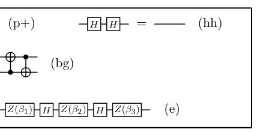
<figcaption class="paper-figure-caption"><b>Fig 1.</b> Figure 1. Complete axiomatization for quantum circuits defined as a conjugated controlled PROP generated by the Hadamard gate H and global phase gates α , using the notations Z(α) := ctrl( α ) and := H H Z(π) . See Section 6 for details.</figcaption>
</figure>
<figure class="paper-figure-card">
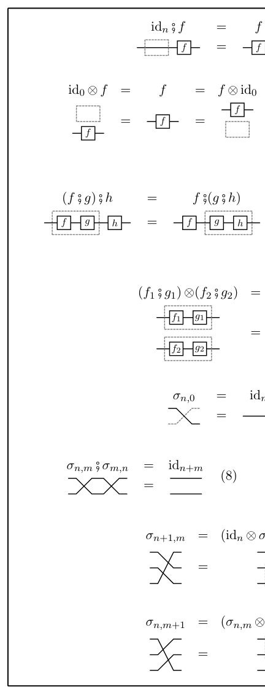
<figcaption class="paper-figure-caption"><b>Fig 2.</b> Figure 2. Coherence laws of PROPs.</figcaption>
</figure>
<figure class="paper-figure-card">
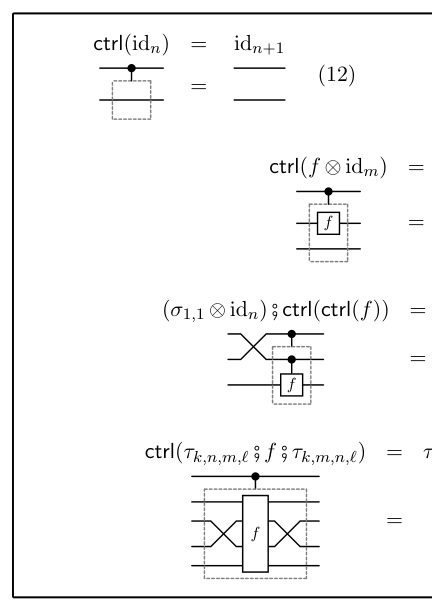
<figcaption class="paper-figure-caption"><b>Fig 3.</b> Figure 3. Coherence laws of control functors where τk,n,m,ℓ:= (idk ⊗σn,m ⊗idℓ).</figcaption>
</figure>
<figure class="paper-figure-card">
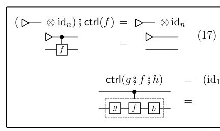
<figcaption class="paper-figure-caption"><b>Fig 4.</b> Figure 4. Additional coherence laws that a controlled PROP may satisfy.</figcaption>
</figure>
<figure class="paper-figure-card">
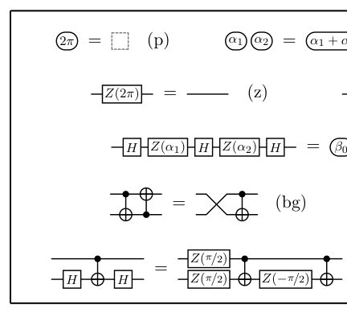
<figcaption class="paper-figure-caption"><b>Fig 5.</b> Figure 5. Axiomatization Av for QC, containing an instance of (zn) for any n ≥2.</figcaption>
</figure>
</div>
<p><strong>Summary.</strong> This paper introduces Controlled PROPs, an extension of algebraic structures used for diagrammatic reasoning, to formally model quantum control. It achieves a significant result by showing that quantum circuits can be axiomatized completely using axioms involving only a small, fixed number of qubits. This provides a mathematically rigorous and computationally tractable framework for analyzing quantum circuit complexity.</p>
<p><strong>Why it may be interesting.</strong> The formal mathematical machinery developed (Controlled PROPs) provides a powerful, abstract tool for analyzing the structure and complexity of quantum computation, which is relevant for understanding resource constraints in quantum algorithms.</p>
<details>
<summary>Detailed structure</summary>
<p><strong>Main problem.</strong> The paper develops a formal mathematical framework, using Controlled PROPs, to rigorously model the concept of 'control' in quantum and reversible computational models.</p>
<p><strong>Main result.</strong> Controlled PROPs provide a simple and complete axiomatization for quantum circuits involving at most three qubits, overcoming the unbounded axiom requirement of standard PROP formalisms.</p>
<p><strong>Method.</strong> The authors introduce controlled PROPs by extending standard PROPs with a control functor, allowing for diagrammatic reasoning that captures conditional gate application.</p>
<p><strong>Model / system.</strong> The model is based on quantum circuits and reversible computation, formalized using the algebraic structure of PROPs (Symmetric Monoidal Categories) extended with a control functor.</p>
<p><strong>Key observables.</strong> Unitary matrices, circuit transformations, and the structure of controlled gates (e.g., $  ext{ctrl}b$).</p>
<p><strong>Important parameters / regimes.</strong> The number of qubits (specifically showing completeness with $\le 3$ qubits), and the structure of the control functor.</p>
<p><strong>Assumptions / limitations.</strong> The framework assumes that quantum operations can be modeled by diagrammatic composition rules, and that the control functor captures the necessary physical constraints.</p>
<p><strong>Figures summary.</strong> Figure 1 illustrates the complete axiomatization for quantum circuits as a conjugated controlled PROP generated by the Hadamard gate and global phase gates.</p>
<p><strong>Paper structure.</strong> The paper builds from defining the general framework of Controlled PROPs, demonstrating their application to quantum circuits, and then proving completeness theorems for specific circuit classes (CQC and ACQC) using matrix decompositions like GCSD.</p>
</details>
<details>
<summary>Abstract</summary>
<p>Control is a fundamental concept in quantum and reversible computational models. It enables the conditional application of a transformation to a system, depending on the state of another system. We introduce a general framework for diagrammatic reasoning featuring control as a constructor. To this end, we provide an elementary axiomatization of control functors, extending the standard formalism of PROPs to controlled PROPs. As an application, we show that controlled PROPs facilitate diagrammatic reasoning for quantum circuits. In particular, they admit a simple and complete axiomatization involving at most three qubits, whereas in the standard PROP setting, completeness necessarily requires axioms involving arbitrarily many qubits.</p>
</details>
<p><sub><a href="#top">↑ back to top</a></sub></p>

<p><a id="paper-2610.23015"></a></p>
<h3 id="crystal-field-phonon-coupling-in-erfeomath736math-single-crystal-via-inelastic-neutron-scattering"><a href="http://arxiv.org/abs/2610.23015v1">Crystal Field-Phonon Coupling in ErFeO$_3$ Single Crystal Via Inelastic Neutron Scattering</a></h3>
<p><strong>Authors:</strong> Guochu Deng, Xiaoxuan Ma, Wanting Yang, Wei Ren, Shixun Cao, Zhenxiang Cheng, Garry J. McIntyre<br>
<strong>Type:</strong> both · <strong>Category:</strong> other · <strong>PDF:</strong> <a href="https://arxiv.org/pdf/2610.23015v1">https://arxiv.org/pdf/2610.23015v1</a><br>
<strong>Analysis basis:</strong> full PDF text, analyzed in chunks</p>
<div class="figure-strip-hint">↔ Scroll figures horizontally</div>
<div class="paper-figures-scroll">
<figure class="paper-figure-card">
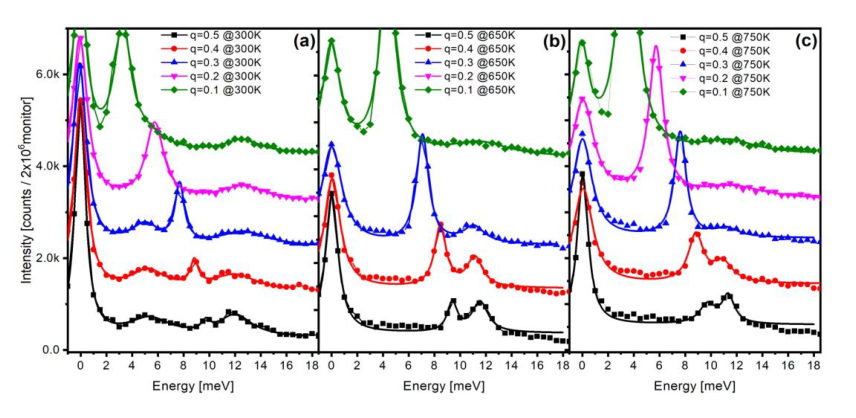
<figcaption class="paper-figure-caption"><b>Fig 1.</b> Fig. 1 The energy scans at a series of transverse q positions (2+q, 0, 4-q) measured at (a) 300K, (b)</figcaption>
</figure>
<figure class="paper-figure-card">
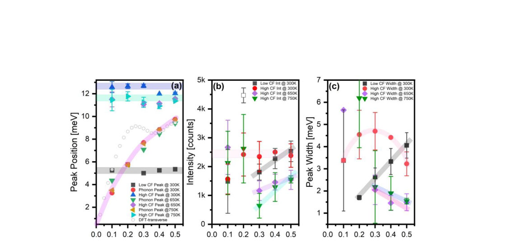
<figcaption class="paper-figure-caption"><b>Fig 2.</b> Fig. 2 (a) Excitation energies, (b) peak intensities, and (c) peak widths of the energy scans at different</figcaption>
</figure>
<figure class="paper-figure-card">
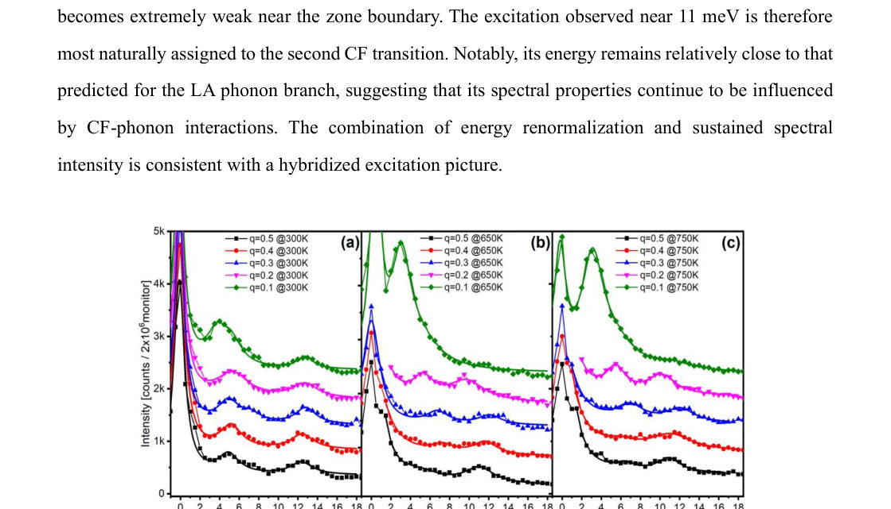
<figcaption class="paper-figure-caption"><b>Fig 3.</b> Fig. 3 The energy scans at a series of longitudinal q positions (2-q, 0, 4-2q) measured at (a) 300 K, (b)</figcaption>
</figure>
<figure class="paper-figure-card">
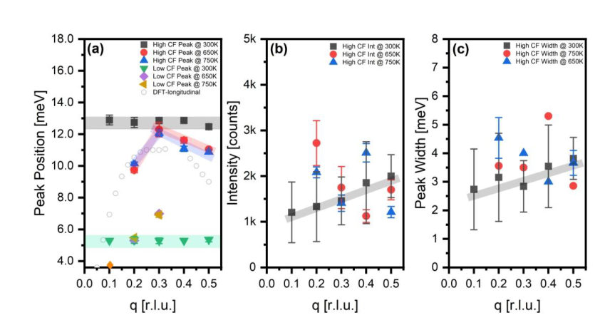
<figcaption class="paper-figure-caption"><b>Fig 4.</b> Fig. 4 (a) Excitation energies, (b) peak intensities, and (c) peak widths of the energy scans at different</figcaption>
</figure>
<figure class="paper-figure-card">
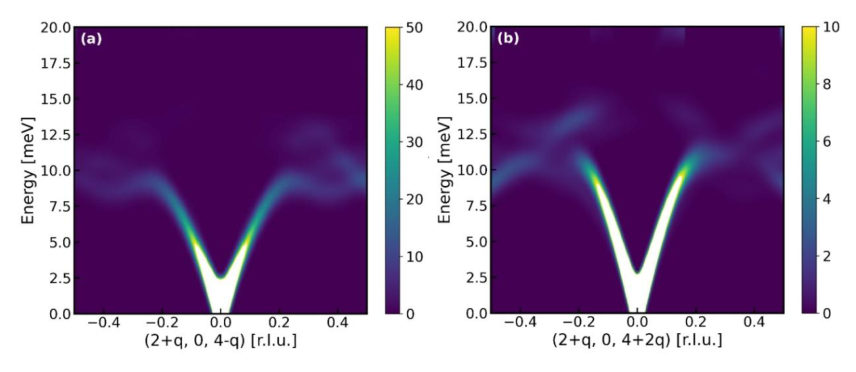
<figcaption class="paper-figure-caption"><b>Fig 5.</b> Fig. 5 Theoretical (a) transverse and (b) longitudinal phonon dispersions calculated through the DFT</figcaption>
</figure>
</div>
<p><strong>Summary.</strong> This work uses inelastic neutron scattering and DFT to study the coupling between electronic Crystal Field excitations and lattice phonons in $    ext{ErFeO}_3$. Strong evidence for CF-phonon hybridization is presented through spectral renormalization and the emergence of phonon-like dispersion at high temperatures. This highlights how lattice dynamics can profoundly modify the electronic excitation spectrum in rare-earth magnetic materials.</p>
<p><strong>Why it may be interesting.</strong> The observation of hybridization effects—where electronic excitations acquire phonon-like dispersion—is a key signature of strong electron-phonon coupling, relevant to understanding charge ordering and metal-insulator transitions in correlated oxides.</p>
<details>
<summary>Detailed structure</summary>
<p><strong>Main problem.</strong> The study investigates the strong coupling mechanism between Crystal Field (CF) excitations and lattice vibrations (phonons) in the rare-earth orthoferrite $ ext{ErFeO}_3$.</p>
<p><strong>Main result.</strong> Pronounced signatures of CF-phonon hybridization, including energy renormalization, intensity enhancement, and the emergence of phonon-like dispersion in CF excitations, are observed, particularly at elevated temperatures.</p>
<p><strong>Method.</strong> The research combines inelastic neutron scattering (INS) experiments across varying temperatures with theoretical support from Density Functional Theory (DFT) phonon calculations.</p>
<p><strong>Model / system.</strong> The physical system is the $    ext{ErFeO}_3$ single crystal. The analysis focuses on the interaction between localized electronic excitations (CF) and the collective lattice modes (phonons).</p>
<p><strong>Key observables.</strong> Changes in excitation energies, spectral intensities, and linewidths, particularly the momentum-dependent dispersion of the CF excitations.</p>
<p><strong>Important parameters / regimes.</strong> Temperatures ranging from 300 K to 750 K; excitation energies near 5 meV and 12 meV; momentum transfer $\mathbf{q}$ near the reciprocal-space point $Q = (2, 0, 4)$.</p>
<p><strong>Assumptions / limitations.</strong> The interpretation relies on fitting spectra with resolution-convoluted models and assuming that observed dispersion patterns indicate hybridization rather than simple thermal effects.</p>
<p><strong>Figures summary.</strong> Figures show INS spectra at various temperatures and momentum transfers, illustrating energy scans, intensity vs. q, and width vs. q for both transverse and longitudinal directions, compared against DFT phonon dispersions.</p>
<p><strong>Paper structure.</strong> The paper systematically presents INS measurements at multiple temperatures, analyzing spectral modifications (shifts, intensity changes) in both transverse and longitudinal directions, supported by DFT calculations to confirm the hybridization mechanism.</p>
</details>
<details>
<summary>Abstract</summary>
<p>Crystal-field (CF) excitations and their coupling to lattice vibrations were investigated in ErFeO$_3$ using inelastic neutron scattering. Pronounced modifications of the excitation spectra, including energy shifts, intensity redistribution, and linewidth changes, were observed as a consequence of CF-phonon coupling. Significant renormalization of the first and second CF excitations, located near 5 meV and 12 meV, respectively, was detected along both transverse and longitudinal directions in the vicinity of the reciprocal-space point Q = (2, 0, 4). The coupling effects become more prominent as the temperature increases from 300 K to 650 K, while a slight suppression is observed at 750 K. Remarkably, CF excitation peaks that are strongly weakened by thermal population effects re-emerge in specific momentum regions through interaction with phonon modes. The coupled excitations exhibit characteristic signatures of hybridization, including energy renormalization, intensity enhancement, and linewidth narrowing. Density-functional-theory-based phonon calculations further support the interpretation of CF-phonon coupling in ErFeO3. These results demonstrate that strong interactions between CF excitations and lattice vibrations can substantially modify the excitation spectra in rare-earth orthoferrites.</p>
</details>
<p><sub><a href="#top">↑ back to top</a></sub></p>

<p><a id="paper-2610.23231"></a></p>
<h3 id="eeg-lempel-ziv-complexity-vis-a-vis-autocorrelation-function"><a href="http://arxiv.org/abs/2610.23231v1">EEG Lempel-Ziv Complexity vis-à-vis Autocorrelation Function</a></h3>
<p><strong>Authors:</strong> Pedro Montoya, Ignacio Cifre, José Luis Rosselló Sanz, Dante R. Chialvo<br>
<strong>Type:</strong> both · <strong>Category:</strong> disordered systems and neural networks · <strong>PDF:</strong> <a href="https://arxiv.org/pdf/2610.23231v1">https://arxiv.org/pdf/2610.23231v1</a><br>
<strong>Analysis basis:</strong> full PDF text, analyzed in chunks</p>
<div class="figure-strip-hint">↔ Scroll figures horizontally</div>
<div class="paper-figures-scroll">
<figure class="paper-figure-card">
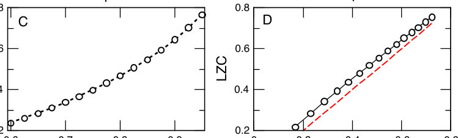
<figcaption class="paper-figure-caption"><b>Fig 1.</b> FIG. 1: Markov chain: Autocorrelation (AC) and Lempel-Ziv complexity (LZC) relation computed numerically. Panels A-C show respectively, the numerically computed lag-1 autocorrelation (AC1), Lempel-Ziv complexity (plotted as 1 −LZC) across the range of the prescribed ρ values, and the weakly non-linear association between AC and LZC. Panel D plots LZC against the binary entropy rate H2((1 −AC1)/2) obtained from the measured AC1. The dashed red diagonal indicates the asymptotic reference LZC = h. The systematic deviation of the finite-length LZC values from this diagonal is consistent with the known finite-size dependence of normalized Lempel-Ziv complexity, which converges very slowly to the...</figcaption>
</figure>
<figure class="paper-figure-card">
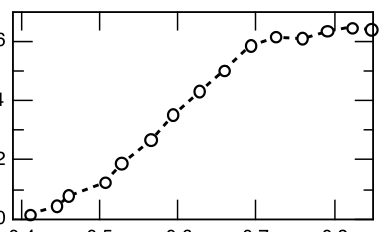
<figcaption class="paper-figure-caption"><b>Fig 2.</b> FIG. 2: 1D random Cantor set: Autocorrelation (AC) and Lempel-Ziv complexity (LZC) relation computed numerically. The upper panel shows the Cantor set parameter P and the numerically computed lag-1 autocorrelation (AC1). The mid- dle panel compares the computed AC1 and the computed Lempel-Ziv complexity (plotted as 1 - LZC) across the range of ρ values. The lower panel depicts the weakly non-linear association between AC and LZC. As P increases, the cor- relation of the Cantor set increases, approaching a relatively more uniform (i.e., repeating) sequence, which is reflected as expected in the Lempel-Ziv complexity. Parameter b = 1/2. The data points are means and SDs from n=64 realizations.</figcaption>
</figure>
<figure class="paper-figure-card">
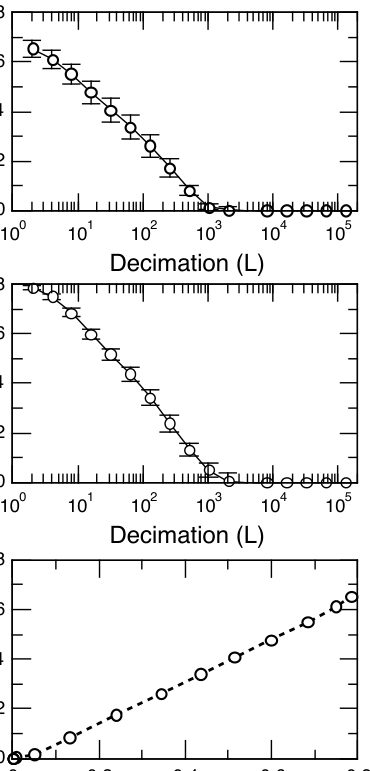
<figcaption class="paper-figure-caption"><b>Fig 3.</b> FIG. 3: Progressive decimation of a correlated 1D random Cantor set: Autocorrelation (AC) and Lempel-Ziv complex- ity (LZC) relation computed numerically. The top two panels show LZC and AC1 as functions of increasing coarse-graining L. The bottom panel shows the same data as the top pan- els across the coarse-graining range. Notice the close corre- spondence between the two metrics as decimation proceeds, progressively decorrelating the random Cantor set. The data points are means and SDs from N = 64 stochastic realizations of the random Cantor set. Parameter values b = 1/2, P = 0.9 .</figcaption>
</figure>
<figure class="paper-figure-card">
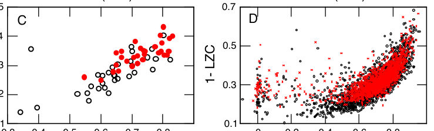
<figcaption class="paper-figure-caption"><b>Fig 4.</b> FIG. 4: Analysis of time series of EEG α-band event-related potentials (ERP) in response to visual imagery (“Happy faces”). Panel A shows typical traces (one for each of 46 electrodes) from a single trial. Time zero corresponds to the time of stimulus presentation. The results in Panel B correspond to the averages (n= 32 trials) for the same electrodes. The computed AC and LZC values shown in Panel C correspond to averages of all electrodes in each single trial, where the empty (black) circles denote the AC/LZC values for the pre-stimulus samples (first 100 msec.) and the filled (red) circles for the last 200 msec. Panel D summarizes the same computations as in Panel C for 51 subjects...</figcaption>
</figure>
<figure class="paper-figure-card">
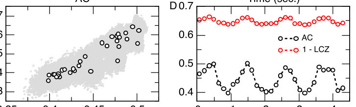
<figcaption class="paper-figure-caption"><b>Fig 5.</b> FIG. 5: Analysis of resting-state EEG recordings (eyes open/closed). The AC1 (first-lag=2 msec.) and normalized Lempel-Ziv complexity results in Panels A and B correspond to calculations in 5-minute windows (i.e., open or closed conditions), and Panels C and D correspond to calculations on sliding, non-overlapping 75-sec windows. Panels A and C include all channels (pairs of data points), and panels C and D show the average across all channels within the sliding window as a function of time. EEG data from [29].</figcaption>
</figure>
</div>
<p><strong>Summary.</strong> This work compares Lempel-Ziv Complexity (LZC) against the Autocorrelation Function (ACF) using EEG data. The key finding is a systematic inverse relationship, indicating that LZC largely reflects temporal redundancy already captured by ACF. The authors recommend that complexity analyses must account for their dependence on basic temporal statistics for sound mechanistic inference.</p>
<p><strong>Why it may be interesting.</strong> While the subject is neuroscience, the rigorous comparison between two distinct measures of temporal structure (LZC vs. ACF) mirrors the methodological challenges in characterizing complex, non-equilibrium dynamics in physical systems.</p>
<details>
<summary>Detailed structure</summary>
<p><strong>Main problem.</strong> The paper revisits and compares the relationship between normalized Lempel-Ziv Complexity (LZC) and the Autocorrelation Function (ACF) in EEG signals to assess the interpretability of complexity measures.</p>
<p><strong>Main result.</strong> A robust inverse relationship was found: signals with stronger temporal correlations (higher ACF) exhibit lower LZC. This suggests LZC captures information already quantified by conventional autocorrelation measures.</p>
<p><strong>Method.</strong> The authors computed LZC (using LZ76 on binarized signals) and ACF for both synthetic time series (from Markov chains) and physiological EEG recordings (resting-state and ERPs).</p>
<p><strong>Model / system.</strong> The primary system is Electroencephalography (EEG) signals, analyzed across synthetic time series generated by stochastic processes and real human data from resting-state recordings and evoked potential tasks.</p>
<p><strong>Key observables.</strong> Normalized Lempel-Ziv Complexity (LZC), first-lag autocorrelation coefficient (AC1), and binary entropy rate.</p>
<p><strong>Important parameters / regimes.</strong> The autocorrelation parameter ($
ho$) used in generating synthetic Markov chains.</p>
<p><strong>Assumptions / limitations.</strong> LZC computation requires binarization of the continuous signal, and the authors caution that complexity measures aggregate multiple statistical properties whose mechanistic meaning is not straightforward.</p>
<p><strong>Figures summary.</strong> Figures demonstrate the systematic inverse relationship between AC and LZC for simulated Markov chains and confirm this relationship holds across different time windows and participants in real EEG data.</p>
<p><strong>Paper structure.</strong> The paper first establishes the theoretical comparison using synthetic Markov chains, demonstrating the inverse relationship. It then applies this analysis to real EEG data (ERPs and resting-state) to validate the finding across different physiological states.</p>
</details>
<details>
<summary>Abstract</summary>
<p>Measures of signal complexity have become increasingly popular in electroencephalography (EEG), where they are often interpreted as indicators of neural information processing, dynamical richness, or conscious state. In contrast, classical measures of temporal dependence, such as the autocorrelation function (ACF), remain more directly linked to known physiological mechanisms and are easier to interpret. The present work revisits, for the EEG practicioner, the relation between normalized Lempel-Ziv complexity (LZC) and temporal autocorrelation in both synthetic and physiological EEG signals. First, synthetic time series exhibiting a broad range of temporal structure and complexity levels were generated using stochastic processes with varying degrees of temporal dependence. LZC and autocorrelation measures were then computed and compared. Across simulated signals, a robust inverse relationship was observed between normalized LZC and the first autocorrelation coefficient, indicating that signals with stronger temporal correlations exhibit lower complexity estimates. This relationship also holds in resting-state EEG recordings from healthy adult participants across channels and subjects, as well as dynamically during eyes open/close maneuvers. Overall, these results show that the information captured by LZC reflects temporal redundancy already quantified by conventional autocorrelation measures. Because autocorrelation measures relate more directly to established neurophysiological mechanisms, including oscillatory persistence, network synchronization, and temporal integration, these results suggest that interpreting complexity-based EEG findings should explicitly account for their dependence on conventional temporal statistics, which may provide a more transparent framework for mechanistic inferences.</p>
</details>
<p><sub><a href="#top">↑ back to top</a></sub></p>

<p><a id="paper-2610.23560"></a></p>
<h3 id="electrostatic-limits-on-quantum-spatial-search"><a href="http://arxiv.org/abs/2610.23560v1">Electrostatic Limits on Quantum Spatial Search</a></h3>
<p><strong>Authors:</strong> Weikang Li<br>
<strong>Type:</strong> theory · <strong>Category:</strong> quantum information and computing · <strong>PDF:</strong> <a href="https://arxiv.org/pdf/2610.23560v1">https://arxiv.org/pdf/2610.23560v1</a><br>
<strong>Analysis basis:</strong> full PDF text, analyzed in chunks</p>
<div class="figure-strip-hint">↔ Scroll figures horizontally</div>
<div class="paper-figures-scroll">
<figure class="paper-figure-card">
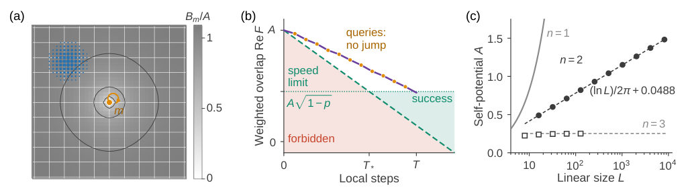
<figcaption class="paper-figure-caption"><b>Fig 1.</b> FIG. 1. Electrostatic bound. (a) Potential drop 𝐵𝑚(𝑥) = 𝐴−𝐾(𝑥, 𝑚), the Dirichlet-optimal weight of the overlap, on a 41 × 41 torus in units of 𝐴, with contours at 𝐵𝑚/𝐴= 0.5, 0.75 and 1 and white lines along every fourth row and column. It vanishes at the marked vertex 𝑚(orange), where queries act, and grows logarithmically with distance. Blue dots sketch the walker amplitude. (b) Real part of the weighted overlap 𝐹for 𝑤= 𝐵𝑚along a schematic trajectory (purple). It starts at 𝐴, does not jump at queries (orange dots) and changes by at most √︁</figcaption>
</figure>
<figure class="paper-figure-card">
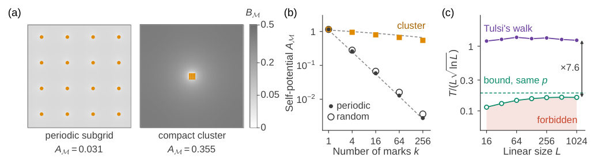
<figcaption class="paper-figure-caption"><b>Fig 2.</b> FIG. 2. Marked sets and tightness of the bound. (a) Potential drop 𝐵M (𝑥) = 𝐴M −𝐾M (𝑥) for two arrangements of 𝑘= 16 marked vertices (orange) on a 64 × 64 torus, a periodic 4 × 4 subgrid and a compact 4 × 4 cluster, on a common square-root grey scale. The spatial average of 𝐵M equals 𝐴M. (b) Self-potential 𝐴M on the 1024 × 1024 torus for periodic subgrids (filled circles), uniformly random sets (open circles, medians of four samples, whose spread is smaller than the symbols) and compact square clusters (orange squares), with ln(𝑁/𝑘)/(4𝜋𝑘) and ln(𝑁/𝑘)/(4𝜋) dashed. At 𝑘= 1 each set is a single marked vertex. (c) Number of local steps 𝑇at which Tulsi’s walk [21] reaches its peak success...</figcaption>
</figure>
</div>
<p><strong>Summary.</strong> This paper resolves the complexity of quantum spatial search on lattices by proving a lower bound on the required local steps. It achieves this by mapping the quantum dynamics onto classical electrostatics, showing the cost is governed by the self-potential of the marked sites. This establishes the optimal scaling for quantum search algorithms in this model.</p>
<p><strong>Why it may be interesting.</strong> The use of electrostatic analogies to derive lower bounds for quantum search algorithms provides a powerful, non-standard theoretical tool for analyzing quantum computational complexity.</p>
<details>
<summary>Detailed structure</summary>
<p><strong>Main problem.</strong> To establish a rigorous lower bound on the minimum number of local steps required for a quantum walker to search a two-dimensional lattice, resolving a long-standing open question in quantum search theory.</p>
<p><strong>Main result.</strong> The lower bound for local steps on an $L 	imes L$ lattice is $\Omega(\sqrt{N} \log N)$, proving the asymptotic optimality of Tulsi's algorithm. The bound also depends on the arrangement of multiple marked vertices via capacitance.</p>
<p><strong>Method.</strong> The proof establishes a lower bound by mapping the search process onto a problem in classical electrostatics, relating the search cost to the self-potential of the marked vertices.</p>
<p><strong>Model / system.</strong> The system is a quantum walker moving on an $L 	imes L$ lattice (or torus), which is treated mathematically using graph Laplacian theory and concepts from electrostatics (point charges, potential drop, capacitance).</p>
<p><strong>Key observables.</strong> Weighted Overlap ($\mathcal{F}_t$), Self-Potential ($A$), Field Energy ($E_w$), and the required number of local steps ($T$).</p>
<p><strong>Important parameters / regimes.</strong> System size $N=L^2$, the number of marked vertices $k$, and the success probability $p$.</p>
<p><strong>Assumptions / limitations.</strong> The analysis often requires the graph to be vertex-transitive, and the bound is derived by relating the search dynamics to Dirichlet energy minimization.</p>
<p><strong>Figures summary.</strong> Figures illustrate the electrostatic bound, showing logarithmic potential growth on a torus, and compare the derived lower bound $T_{\min}$ against the steps taken by known algorithms like Tulsi's walk for various marked vertex arrangements.</p>
<p><strong>Paper structure.</strong> The paper develops the lower bound by introducing the electrostatic analogy, deriving the time complexity bound based on the self-potential, and then applying this framework to specific graph geometries like the torus to match known optimal search times.</p>
</details>
<details>
<summary>Abstract</summary>
<p>We prove that a quantum walker cannot search a two-dimensional lattice in Grover's $O(\sqrt N)$ time, resolving the long-standing open question posed by Aaronson and Ambainis in 2003. A walker that hops between neighbouring sites of an $L\times L$ lattice, $N=L^2$, needs $Ω(\sqrt{N\log N})$ local steps at least to find a marked vertex, even with unlimited memory and free queries. Hence, Tulsi's algorithm is asymptotically optimal. Our proof rests on a surprising correspondence with classical electrostatics. We treat the marked vertex as a point charge and weight the overlap between the walker's states with and without the mark by the potential drop, which vanishes where queries act. Only local steps change this weighted overlap, at a rate limited by the field energy, so the lower bound is set by the self-potential of the charge. In the plane this self-potential grows logarithmically with system size, like the Coulomb potential, leading to the extra root-logarithmic factor. Several marked vertices turn the charge into a conductor, and the lower bound depends on their arrangement through its capacitance.</p>
</details>
<p><sub><a href="#top">↑ back to top</a></sub></p>

<p><a id="paper-2610.22701"></a></p>
<h3 id="emergent-discrimination-and-polarization-in-multi-agent-systems"><a href="http://arxiv.org/abs/2610.22701v1">Emergent Discrimination and Polarization in Multi-Agent Systems</a></h3>
<p><strong>Authors:</strong> Nestor Caticha, João Henrique Sant'Ana, Felippe Alves, Davi Bastos Costa, Mariana Mercucci, Juan P. Neirotti, Otavio Citton, Renato Vicente<br>
<strong>Type:</strong> theory · <strong>Category:</strong> disordered systems and neural networks · <strong>PDF:</strong> <a href="https://arxiv.org/pdf/2610.22701v1">https://arxiv.org/pdf/2610.22701v1</a><br>
<strong>Analysis basis:</strong> full PDF text, analyzed in chunks</p>
<div class="figure-strip-hint">↔ Scroll figures horizontally</div>
<div class="paper-figures-scroll">
<figure class="paper-figure-card">
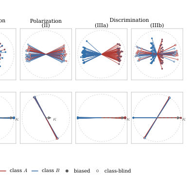
<figcaption class="paper-figure-caption"><b>Fig 1.</b> Figure 1: Four collective states and representative populations. Left: the phase diagram in the space of bias strength b and the fraction fb of biased agents, obtained from societies of N = 100 agents by averaging two realizations at each point of a 300 × 300 grid. In (I) out-group favoritism leads to a frustrated, in the sense of spin glass, structure of trust relations and opinions. In (II), polarization, opinion and trust form two camps unrelated to class. In (IIIa), both trust and opinion are highly correlated with class; in (IIIb), b is so high that irrespective of opinion, trust and class are correlated. Right: one representative N = 100 population from each phase. Each arrow is an...</figcaption>
</figure>
<figure class="paper-figure-card">
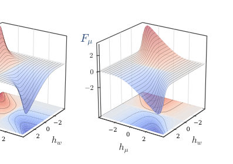
<figcaption class="paper-figure-caption"><b>Fig 2.</b> Figure 2: Evidence landscape and modulation functions. Left: Minus the log-evidence −ln Z. Online SGD follows its negative gradient toward higher-evidence regions and away from the dis- sonant configurations where evidence is low. Center and right: the opinion and trust modulation functions, Fw and Fµ. Learning and unlearning occurs in the low evidence regions which represent cognitive dissonance, i.e. when the emitter agrees (respect. disagrees) with a receiver that it distrusts (respect. trusts). Even in those low evidence regions the large changes occur mainly in one sector where the field is less in magnitude. This blame attribution to a sector resembles the algorithm of least action...</figcaption>
</figure>
<figure class="paper-figure-card">
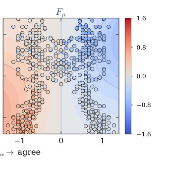
<figcaption class="paper-figure-caption"><b>Fig 3.</b> Figure 3: Opinion and trust updates under in-context learning. The backgrounds show the analytic functions and the points show the measured changes divided by one global fitted scale for each experiment. The opinion experiment (left) contains 550 measured changes, with 94.7% sign agreement and rank correlation rs = 0.90. The trust experiment (right) contains 712 measured changes, with 86.0% sign agreement and correlation r = 0.85.</figcaption>
</figure>
<figure class="paper-figure-card">
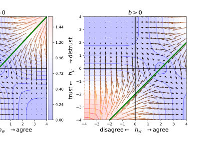
<figcaption class="paper-figure-caption"><b>Fig 4.</b> Figure 4: Effect of the prejudice bias. Learning is driven by flows that decrease dissonance in the evidence landscape. The arrows components are proportional to the learning modulations Fw, Fµ at the receiver’s field hw and hµ induced by learning the emitter’s opinion. Left: More tolerant: b &lt; 0 increases the basin of attraction of agree/trust. Center: b = 0. Right : Less tolerant: b &gt; 0 increases the basin of attraction of disagree/distrust.</figcaption>
</figure>
<figure class="paper-figure-card">
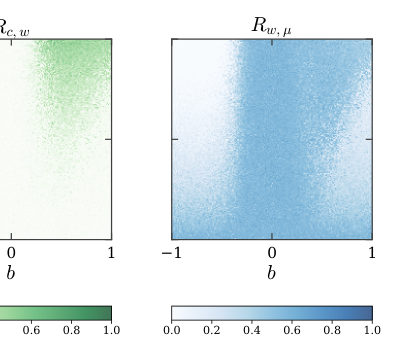
<figcaption class="paper-figure-caption"><b>Fig 5.</b> Figure 5: Order parameters over the (b, fb) plane. Rµ,c measures trust–class alignment, Rc,w opinion–class alignment, and Rw,µ opinion–trust alignment. Each panel averages two N = 100 realizations at each point of a 300 × 300 grid.</figcaption>
</figure>
</div>
<p><strong>Summary.</strong> This work models opinion formation and discrimination in multi-agent systems using adaptive learning rules. By introducing a structural group bias, the authors derive a phase diagram showing four distinct collective states. The findings demonstrate that simple local interactions can generate complex, measurable forms of societal polarization.</p>
<p><strong>Why it may be interesting.</strong> The use of order parameters and phase diagrams to characterize emergent collective behavior in a system governed by local, adaptive learning rules mirrors concepts used in spin-glass physics and complex systems modeling.</p>
<details>
<summary>Detailed structure</summary>
<p><strong>Main problem.</strong> The paper theoretically investigates how polarization and discrimination emerge in a population of learning agents through repeated pairwise interactions.</p>
<p><strong>Main result.</strong> The dynamics generate a rich phase diagram in the bias parameter space, revealing four distinct collective states, including spin-glass frustrated out-group favoritism.</p>
<p><strong>Method.</strong> The study uses online Bayesian rules derived from teacher-student learning to model adaptive updates to opinion weights and trust estimates.</p>
<p><strong>Model / system.</strong> The model consists of N agents interacting over P issues, where agents maintain linear decision layers for binary opinions and evolving trust estimates for every other agent.</p>
<p><strong>Key observables.</strong> Order parameters characterizing pairwise opinion alignment, trust, and group membership.</p>
<p><strong>Important parameters / regimes.</strong> Bias strength ($b$) and prevalence ($f_b$) of group bias.</p>
<p><strong>Assumptions / limitations.</strong> Agents use adaptive linear decision layers, and the analysis relies on order parameters from statistical mechanics to connect local dynamics to collective states.</p>
<p><strong>Figures summary.</strong> Figure 1 shows the phase diagram in the $(b, f_b)$ space, illustrating the four collective states. Other figures detail the evolution of opinion and trust profiles.</p>
<p><strong>Paper structure.</strong> The paper first establishes the local learning dynamics via Bayesian updates, then introduces group bias, and finally uses order parameters to map the local dynamics onto a global phase diagram.</p>
</details>
<details>
<summary>Abstract</summary>
<p>We study theoretically how discrimination and polarization can emerge in a population of learning agents. Each agent uses an adaptive linear decision layer to map a language-model embedding of an issue to a binary opinion and maintains an evolving estimate of how much it trusts every other agent. Through pairwise interactions, agents update both their decision weights and trust estimates using an online Bayesian rule derived from teacher-student learning over a noisy channel. In-context-learning experiments with large language models qualitatively reproduce the predicted opinion and trust updates. We then assign each agent one of two arbitrary group labels, A or B, and model group bias by allowing a fraction $f_b$ of agents to shift its perceived agreement with each message by a strength $b$, a bias steering prejudice, depending on whether the sender and receiver share a label. We use order parameters from statistical mechanics to connect these local dynamics to collective states and transitions. Starting from uniformly random initial conditions, simulations reveal a rich phase diagram in the $(b,f_b)$ plane, comprising four collective states: spin-glass frustrated out-group favoritism, nondiscriminatory polarization, discrimination with opinion alignment, and discrimination without opinion alignment. Which state emerges depends on both the strength and prevalence of the bias. These results show how simple local learning dynamics can generate qualitatively distinct forms of polarization and discrimination, underscoring the need for population-level safety analysis of multi-agent systems. They also suggest measurable order parameters for characterizing analogous collective states in human societies.</p>
</details>
<p><sub><a href="#top">↑ back to top</a></sub></p>

<p><a id="paper-2610.23773"></a></p>
<h3 id="engineering-nonrelativistic-spin-splitting-in-semiconductors-by-altermagnetic-proximity"><a href="http://arxiv.org/abs/2610.23773v1">Engineering nonrelativistic spin splitting in semiconductors by altermagnetic proximity</a></h3>
<p><strong>Authors:</strong> Sing Lam Wong, Marcel Franz<br>
<strong>Type:</strong> theory · <strong>Category:</strong> other · <strong>PDF:</strong> <a href="https://arxiv.org/pdf/2610.23773v1">https://arxiv.org/pdf/2610.23773v1</a><br>
<strong>Analysis basis:</strong> full PDF text, analyzed in chunks</p>
<div class="figure-strip-hint">↔ Scroll figures horizontally</div>
<div class="paper-figures-scroll">
<figure class="paper-figure-card">
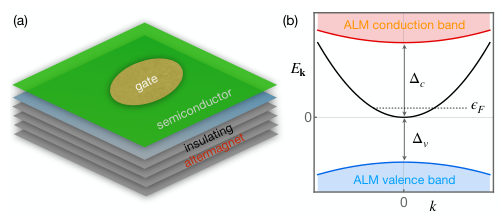
<figcaption class="paper-figure-caption"><b>Fig 1.</b> Figure 1. The proposed setup. (a) A thin semiconductor film is supported on an insulating altermagnet. Electrostatic top gate can be used to define an elliptical quantum dot that can function as a field- free spin qubit. (b) Band structure: conduction band of the semiconductor (solid black line) is as- sumed to lie inside the gap of the insulating altermagnet. The band alignment is described by two parameters ∆v and ∆c that measure the position of the semiconductor band edge with respect to the ALM valence and conduction band, re- spectively.</figcaption>
</figure>
<figure class="paper-figure-card">
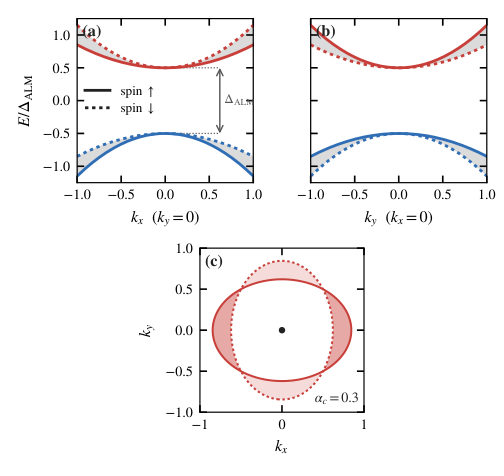
<figcaption class="paper-figure-caption"><b>Fig 2.</b> Figure 2. Spectral properties of the altermagnet Hamilto- nian defined in Eq. (4). (a,b) Energy levels along kx and ky: both spins are exactly degenerate at each band edge and differ only in curvature; comparing (a) with (b) shows the C4T altermagnetic symmetry. Shading marks the spin split- ting. (c) Constant-energy contours of the conduction band: ellipses 90○-rotated between the spins, centered on the Γ point represented by the dot. Valence band: blue; conduction band: red; spin ↑: solid; spin ↓: dotted. Parameters are: ∆ALM = 1 eV with Eedge c = −Eedge v = ∆ALM/2, so that the gap is centered at zero energy, (mv, mc) = (−1, 1) eV−1, and η0 v = η0 c = 150 meV, giving ∣αn∣= 0.3, with the...</figcaption>
</figure>
<figure class="paper-figure-card">
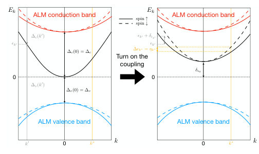
<figcaption class="paper-figure-caption"><b>Fig 3.</b> Figure 3. Altermagnetic proximity effect. (a) In the ab- sence of tunneling, the donor and and the host are indepen- dent: the spin-degenerate semiconductor band ϵk (black) lies inside the gap of the altermagnet, between its spin-split va- lence (blue) and conduction (red) bands. It is useful to define momentum-dependent gaps ∆v(k) and ∆c(k) separating it from the two donor bands, measured at the same momentum. At the band edge they reduce to ∆v(0) = ∆v and ∆c(0) = ∆c. (b) When the tunneling is turned on, the host band undergoes a level shift δϵk and acquires a spin splitting inherited from the altermagnet (spin ↑solid, spin ↓dashed). Because the induced couplings depend on momentum through...</figcaption>
</figure>
<figure class="paper-figure-card">
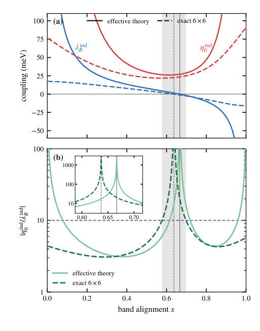
<figcaption class="paper-figure-caption"><b>Fig 4.</b> Figure 4. Properties of the effective Hamiltonian compared to the exact solution. Solid lines represent the effective theory Eqs. (31,32) while dashed lines are extracted from the exact spectrum of Eq. (9) via Eq. (43) at ∣k∣= 0.1. (a) The alter- magnetic coupling ηind 0 (red) and the Rashba coupling λind R (blue). (b) The ratio ∣ηind 0 /λind R ∣. Two vertical lines mark the sweet spot: x∗= 0.667 from Eq. (33) (solid) and the exact value x = 0.637 from Eq. (A7) (dashed), at which the ex- act λind R vanishes; the inset zooms into the two peaks. The shaded band highlights the region where Eq. (36) is satisfied for kF = 0.1 and the system may be regarded as predomi- nantly altermagnetic....</figcaption>
</figure>
<figure class="paper-figure-card">
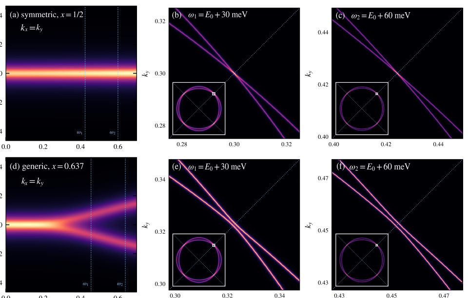
<figcaption class="paper-figure-caption"><b>Fig 5.</b> Figure 5. Exact spectral function As(k, ω) for the semiconductor, Eq. (39), for the symmetric (top) and generic (bottom) parameter set, each at its exact Γ-point sweet spot, Eq. (A9): x = 1/2 and x = 0.637. (a,d) Color plot of As(k, ω) along the nodal line kx = ky, with ω measured from the spin-averaged in-gap dispersion ¯E(k). The symmetric set remains degenerate at every ∣k∣while for the generic set the residual λind k splits the band by 2k∣λind k ∣. (b,c,e,f) Constant-energy cuts at ω1 = E0+30 meV and ω2 = E0 + 60 meV, with E0 the bottom of the in-gap band (δϵ0 above the bare host edge), zoomed in to one of the four diagonal touching points; the insets show the full spin-split contours....</figcaption>
</figure>
</div>
<p><strong>Summary.</strong> This work proposes a method to engineer desirable nonrelativistic spin-split electronic states in established semiconductor platforms by coupling them to an altermagnetic material. The key mechanism is the transfer of the altermagnetic spin splitting via virtual tunneling, which allows for the independent tuning of spin-orbit coupling effects. This provides a general, electrically tunable route for advanced spintronic and quantum device design.</p>
<p><strong>Why it may be interesting.</strong> The ability to engineer spin-splitting by separating material requirements is a powerful general strategy for designing quantum devices, offering clean control over spin-orbit interactions.</p>
<details>
<summary>Detailed structure</summary>
<p><strong>Main problem.</strong> The paper addresses the challenge of engineering nonrelativistic spin splitting in semiconductors, which is crucial for spintronics, by circumventing the need for a single, ideal material.</p>
<p><strong>Main result.</strong> They demonstrate that this desired spin splitting can be successfully transferred to a conventional semiconductor host via proximity coupling with an adjacent altermagnetic material.</p>
<p><strong>Method.</strong> The theoretical framework involves developing an analytical theory and using a unitary Schrieffer-Wolff transformation to derive an effective Hamiltonian for the semiconductor by integrating out the degrees of freedom of the altermagnet.</p>
<p><strong>Model / system.</strong> The system is a heterostructure comprising a non-magnetic semiconductor host coupled to an insulating altermagnet donor. The model uses a multi-band Hamiltonian incorporating tunneling terms and spin-orbit coupling effects.</p>
<p><strong>Key observables.</strong> The induced nonrelativistic and relativistic spin splittings, the vanishing of the interfacial Rashba coupling, and the persistence of the d-wave spin splitting.</p>
<p><strong>Important parameters / regimes.</strong> The band alignment parameters ($\Delta_v, \Delta_c$) and the tuning parameter $x$, which controls the relative strength of the coupling terms.</p>
<p><strong>Assumptions / limitations.</strong> The analysis assumes the altermagnet is gapped and that the coupling can be treated perturbatively or via the Schrieffer-Wolff transformation, although exact diagonalization confirms robustness beyond this regime.</p>
<p><strong>Figures summary.</strong> Figures illustrate the band structure of the proposed heterostructure, showing the mechanism of spin splitting transfer and the spectral properties under different parameter regimes.</p>
<p><strong>Paper structure.</strong> The paper progresses from identifying the material limitations to proposing the proximity engineering solution. It develops the analytical theory using the Schrieffer-Wolff method, derives the effective Hamiltonian, and then analyzes the resulting spin-splitting tunability by identifying a 'sweet spot' condition.</p>
</details>
<details>
<summary>Abstract</summary>
<p>Altermagnets combine vanishing net magnetization with momentum-dependent, nonrelativistic spin splitting, offering functionalities attractive for spintronics and quantum devices. Their practical use, however, is constrained by the limited availability of materials that simultaneously possess the required altermagnetic symmetry, semiconducting electronic structure, and weak spin-orbit coupling. Here we show that these requirements can instead be separated between constituent materials through proximity engineering. We develop an analytical theory for a conventional semiconductor coupled to a gapped $d$-wave altermagnet and demonstrate that virtual tunneling transfers the altermagnetic spin splitting to the semiconductor. Crucially, the induced nonrelativistic and relativistic spin splittings exhibit qualitatively different dependences on band alignment. Virtual processes involving the valence and conduction bands of the altermagnet can reinforce the altermagnetic splitting while contributing with opposite signs to the interfacial Rashba coupling. Consequently, electrostatic tuning can access a regime in which the Rashba splitting vanishes while a sizable $d$-wave spin splitting persists. Exact diagonalization of the full heterostructure model confirms the analytical theory and establishes the robustness of this mechanism beyond the perturbative regime. Our results identify altermagnetic proximity as a route for engineering nonrelativistic spin-split electronic states in established semiconductor platforms, providing a general strategy for disentangling magnetic and relativistic spin interactions in quantum heterostructures.</p>
</details>
<p><sub><a href="#top">↑ back to top</a></sub></p>

<p><a id="paper-2610.23692"></a></p>
<h3 id="expressivity-of-iqp-feature-map-quantum-kernels-via-reproducing-kernel-hilbert-spaces"><a href="http://arxiv.org/abs/2610.23692v1">Expressivity of IQP Feature-Map Quantum Kernels via Reproducing Kernel Hilbert Spaces</a></h3>
<p><strong>Authors:</strong> Valeria Repetto, Stefano Melchionna, Romina D'Aurizio<br>
<strong>Type:</strong> both · <strong>Category:</strong> quantum information and computing · <strong>PDF:</strong> <a href="https://arxiv.org/pdf/2610.23692v1">https://arxiv.org/pdf/2610.23692v1</a><br>
<strong>Analysis basis:</strong> full PDF text, analyzed in chunks</p>
<div class="figure-strip-hint">↔ Scroll figures horizontally</div>
<div class="paper-figures-scroll">
<figure class="paper-figure-card">
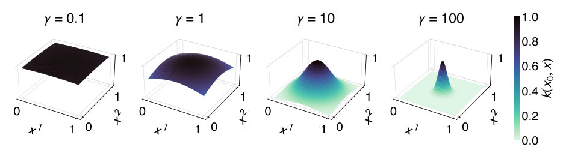
<figcaption class="paper-figure-caption"><b>Fig 1.</b> FIG. 1. Gaussian RKHS generators for different values of γ. Each plot displays the values of the kernel k(x, c) where c is fixed at the centre of the square and x = (x1, x2) where x1 and x2 are the Cartesian coordinates on the horizontal plane.</figcaption>
</figure>
<figure class="paper-figure-card">
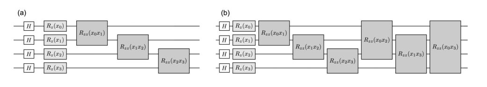
<figcaption class="paper-figure-caption"><b>Fig 2.</b> FIG. 2. Graphic high-level circuit representation of 4 qubit IQP Feature Map with (a) linear entanglement and (b) full entanglement.</figcaption>
</figure>
<figure class="paper-figure-card">
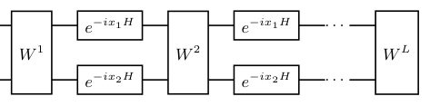
<figcaption class="paper-figure-caption"><b>Fig 3.</b> FIG. 3. Circuit representation of feature maps considered in [21] and [25]. An example of such map is the Z-feature map.</figcaption>
</figure>
<figure class="paper-figure-card">
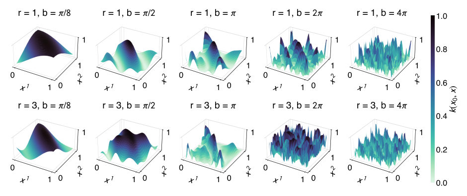
<figcaption class="paper-figure-caption"><b>Fig 4.</b> FIG. 6. Quantum RKHS generators are represented for different values of bandwidth and number of repetitions. Each plot displays the values of the kernel k(x, c) where c is fixed at the centre of the square and x = (x1, x2) where x1 and x2 are Cartesian coordinates in the horizontal plane. The periodic-like nature of the kernel becomes visible for larger values of b. It can also be observed that for intermediate values of b the kernel is multi-modal which suggests that it can be used to capture multi-modality or long range interactions in the data. Increasing the number of repetitions increases the complexity of the RKHS generator.</figcaption>
</figure>
<figure class="paper-figure-card">
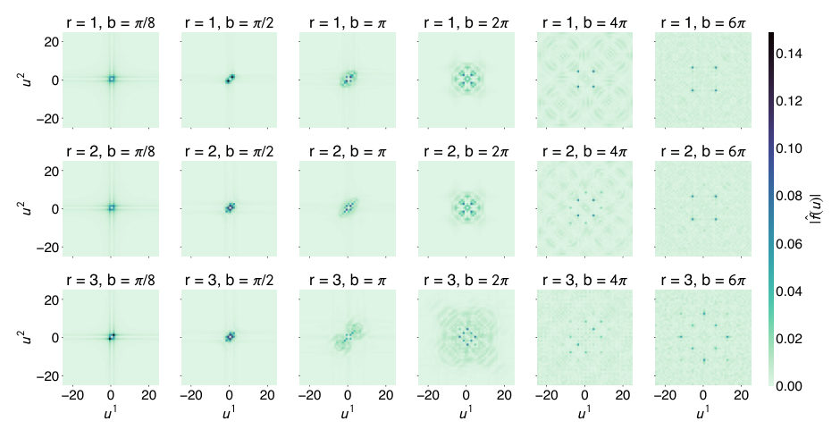
<figcaption class="paper-figure-caption"><b>Fig 5.</b> FIG. 7. Heatmap representations of the Fourier transform of the 2D RKHS (see Figure 6) for different values of the bandwidth and reps parameter with linear entanglement.</figcaption>
</figure>
</div>
<p><strong>Summary.</strong> This work theoretically characterizes the expressive power of Quantum Kernels built using the IQP feature map by deriving a Fourier representation of the associated Reproducing Kernel Hilbert Space. It demonstrates that the kernel's behavior falls into three distinct regimes—local, multimodal, and periodic—depending critically on the bandwidth hyperparameter. This establishes a crucial criterion: the quantum kernel's power is maximized only when its accessible frequencies match the intrinsic structure of the data.</p>
<p><strong>Why it may be interesting.</strong> While focused on ML, the explicit connection between the kernel's spectral properties (accessible frequencies) and the underlying data structure provides a powerful theoretical tool for understanding how quantum feature maps encode information, which has parallels in analyzing spectral properties in quantum many-body systems.</p>
<details>
<summary>Detailed structure</summary>
<p><strong>Main problem.</strong> The paper addresses the lack of a theoretical characterization for the function class (expressivity) represented by Quantum Kernels, specifically those derived from the Instantaneous Quantum Polynomial (IQP) feature map.</p>
<p><strong>Main result.</strong> The RKHS generators for IQP kernels are shown to have an explicit Fourier sum representation, revealing three distinct bandwidth regimes (localized, multimodal, periodic) that dictate the kernel's expressive power.</p>
<p><strong>Method.</strong> The authors derived the Fourier representation of the RKHS generators and conducted numerical experiments on synthetic datasets to map the kernel's performance to the data's inherent structure.</p>
<p><strong>Model / system.</strong> The model involves Quantum Kernels (QKs) utilizing the IQP feature map, which maps classical data into a high-dimensional Hilbert space via a unitary transformation. The analysis focuses on how the bandwidth hyperparameter tunes the resulting kernel structure.</p>
<p><strong>Key observables.</strong> Test-set F1-score (for classification/anomaly detection), and the structure of the RKHS generators (Fourier sums).</p>
<p><strong>Important parameters / regimes.</strong> Bandwidth hyperparameter ($b$), number of repetitions ($r$), multimodality ($C$), and dimensionality ($D$).</p>
<p><strong>Assumptions / limitations.</strong> The analysis is restricted to synthetic datasets with controlled periodic or multimodal structures, and the theoretical characterization is specific to the IQP feature map.</p>
<p><strong>Figures summary.</strong> Figures illustrate the RKHS generators vs. bandwidth for $D=2$, and supplementary figures show the Test-set F1-score for periodic and multimodal tasks as a function of bandwidth or frequency.</p>
<p><strong>Paper structure.</strong> The paper first derives the explicit Fourier sum representation for the IQP kernel's RKHS generators. It then analyzes how the bandwidth parameter induces three distinct expressive regimes (local, multimodal, periodic). Finally, it validates these theoretical findings through numerical experiments on synthetic datasets.</p>
</details>
<details>
<summary>Abstract</summary>
<p>Quantum kernels are among the most promising methods in quantum machine learning, providing a natural way to embed data into high-dimensional Hilbert spaces via quantum circuits and capturing non-linear relationships in data. Their learning behaviour is governed by the function class they represent, which is formally characterized by the structure of the associated Reproducing Kernel Hilbert Space (RKHS). However, a theoretical characterization of this function class, and of how it depends on the choice of feature map and its hyperparameters, is still lacking. In this work, we focus on the Instantaneous Quantum Polynomial (IQP) feature map and derive a Fourier representation of the associated RKHS generators as finite sums of trigonometric functions evaluated on polynomially transformed input variables, with a finite set of accessible frequencies determined by the circuit construction and scaled by the bandwidth hyperparameter. This representation identifies three bandwidth regimes with qualitatively distinct expressive properties from localised, through multimodal, to periodic. Numerical experiments on synthetic datasets with controlled periodic and multimodal structure, across data dimensions and feature-map configurations, reproduce the three regimes in both supervised classification and unsupervised anomaly detection, benchmarked against a classical Gaussian kernel. These results make the relationship between expressivity and data structure explicit for IQP kernels: expressive power translates into a practical benefit only when the accessible frequencies match with the structure of the data, which provides a criterion for selecting the bandwidth when the periodic or multimodal structure of data is known.</p>
</details>
<p><sub><a href="#top">↑ back to top</a></sub></p>

<p><a id="paper-2610.23296"></a></p>
<h3 id="learning-angles-for-quantum-approximate-optimization"><a href="http://arxiv.org/abs/2610.23296v1">Learning angles for quantum approximate optimization</a></h3>
<p><strong>Authors:</strong> Johannes Jakubik, Isabelle Wittmann, Zaheed Gaffoor, Gciniwe Simphiwe Baloyi, Craig Mahlasi, Etienne Vos, Thomas Brunschwiler, Daniel J. Egger<br>
<strong>Type:</strong> both · <strong>Category:</strong> quantum information and computing · <strong>PDF:</strong> <a href="https://arxiv.org/pdf/2610.23296v1">https://arxiv.org/pdf/2610.23296v1</a><br>
<strong>Analysis basis:</strong> full PDF text, analyzed in chunks</p>
<div class="figure-strip-hint">↔ Scroll figures horizontally</div>
<div class="paper-figures-scroll">
<figure class="paper-figure-card">
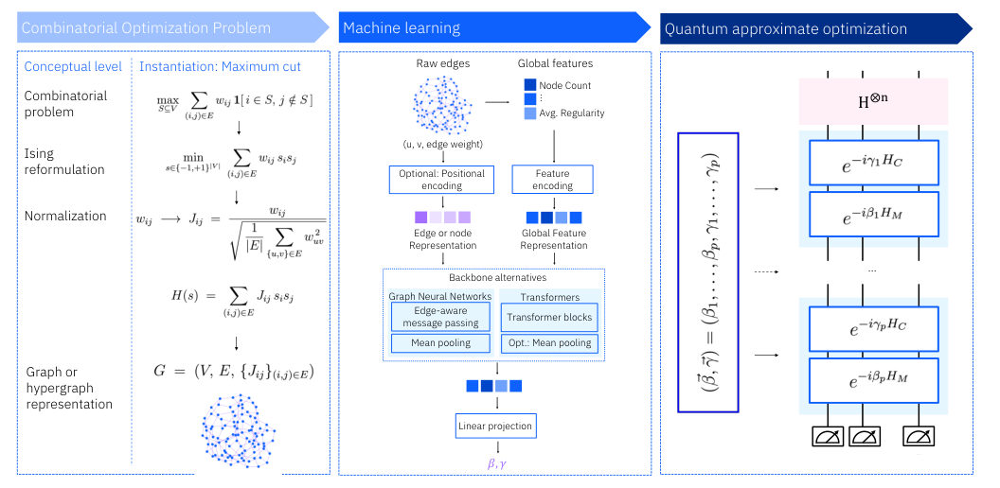
<figcaption class="paper-figure-caption"><b>Fig 1.</b> FIG. 1. Learning angles for QAOA: In Phase (1), we cast the optimization problem into a (hyper-)graph representation via a normalized Hamiltonian, which allows us to train a deep learning model in Phase (2) across varying graph types. Deep learning models mostly rely on information of the raw graph topologies as well as aggregated global features. Backbones can be distinguished into Graph Neural Network-type models and Transformer-type models. In Phase (3), we describe the inference, where we derive angles (β, γ) via single forward passes and test their quality through simulation and on quantum hardware.</figcaption>
</figure>
<figure class="paper-figure-card">
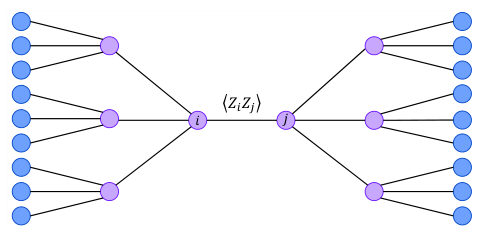
<figcaption class="paper-figure-caption"><b>Fig 2.</b> FIG. 2. Tree graph underlying the fixed-angles design for random four-regular graphs. The purple nodes show the tree seen by depth-one QAOA. The purple and blue nodes show the tree seen by depth-two QAOA.</figcaption>
</figure>
<figure class="paper-figure-card">
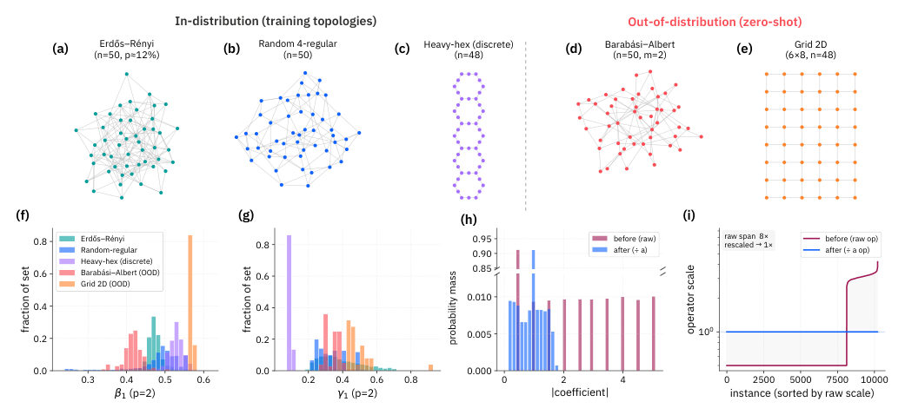
<figcaption class="paper-figure-caption"><b>Fig 3.</b> FIG. 3. Panels (a), (b), and (c) exemplify in-distribution Erd˝os–R´enyi, random-regular, and heavy-hex graphs, respectively. Panels (d) and (e) exemplify out-of-distribution Barab´asi–Albert and 2D grid graphs, respectively. Panels (f) and (g) show the distribution of the β1 and γ1 angles, respectively, obtained from the solver at p = 2 prior to rescaling γ. (h) Distribution of the γ angles before and after rescaling with Eq. (7). (i) Per-instance cost-operator scale factor a across all five graph topologies.</figcaption>
</figure>
<figure class="paper-figure-card">
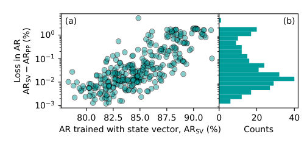
<figcaption class="paper-figure-caption"><b>Fig 4.</b> FIG. 4. Quality validation of the QAOA angle training with Pauli propagation at p = 2 and 20 nodes. (a) AR loss of the angles optimized with Pauli propagation versus the AR of angles optimized with a state vector. Each marker is one of either 160 random d-regular graphs with d ∈{3, 4, ..., 10} or 160 Erd˝os–R´enyi graphs with pi ∈{5%, 6%, ..., 12%}. The ARs of all the trained angles are evaluate with a state vector. (b) Distribution of the loss in AR.</figcaption>
</figure>
<figure class="paper-figure-card">
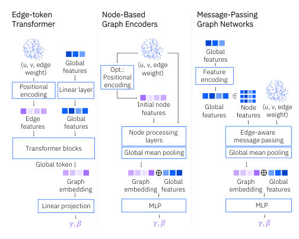
<figcaption class="paper-figure-caption"><b>Fig 5.</b> FIG. 5. Schematic overview of the three classes of graph-based models used for QAOA angle prediction. The models differ in how graph structure and global graph features are represented, processed, and combined before predicting the QAOA angles.</figcaption>
</figure>
</div>
<p><strong>Summary.</strong> This paper tackles the computational bottleneck in QAOA by treating the selection of variational angles as a graph regression problem. By training deep learning models on graph structures, the authors create a fast predictor that outputs high-quality angles for new, unseen optimization problems. This significantly accelerates the application of QAOA to complex combinatorial optimization tasks.</p>
<p><strong>Why it may be interesting.</strong> This work directly addresses the practical scalability of quantum algorithms by replacing computationally intensive classical optimization loops with fast, data-driven ML inference, which is crucial for applying QAOA to real-world, large-scale problems.</p>
<details>
<summary>Detailed structure</summary>
<p><strong>Main problem.</strong> The core problem is overcoming the computational bottleneck associated with finding high-quality variational angles required for the Quantum Approximate Optimization Algorithm (QAOA).</p>
<p><strong>Main result.</strong> The authors propose a machine learning framework that learns the mapping from a problem's graph structure directly to the optimal QAOA angles, achieving near-solver quality with a single forward pass.</p>
<p><strong>Method.</strong> They frame angle selection as a supervised, graph-level regression problem, training deep neural networks (like GIN or specialized Transformers) on graph representations to predict the necessary variational parameters.</p>
<p><strong>Model / system.</strong> The system is QAOA, which maps combinatorial optimization problems (like MaxCut) onto an Ising Hamiltonian. The variational state is $|\psi_p(eta, \gamma)
angle$, and the goal is to minimize the expected energy $E(eta, \gamma)$.</p>
<p><strong>Key observables.</strong> Approximation Ratio (AR) of the solution quality, and the variational angles $(eta, \gamma)$ themselves.</p>
<p><strong>Important parameters / regimes.</strong> The QAOA depth $p$, and the graph structure (topology, weights) of the optimization problem instance.</p>
<p><strong>Assumptions / limitations.</strong> The primary assumption is that the relationship between the graph structure and the optimal angles is learnable via deep graph neural networks, allowing for generalization to unseen topologies.</p>
<p><strong>Figures summary.</strong> Figures illustrate the process flow: casting the optimization problem into a graph representation, training the deep learning model across various graph types, and demonstrating the resulting angle prediction.</p>
<p><strong>Paper structure.</strong> The paper first introduces QAOA and its optimization challenge. It then details the ML approach, comparing various graph encoder architectures (EdgeTF, GraphTF, GIN) to predict the angles. Finally, it validates the method by showing performance on quantum hardware and generalization capabilities.</p>
</details>
<details>
<summary>Abstract</summary>
<p>The Quantum Approximate Optimization Algorithm (QAOA) and its variants are leading algorithms to help solve challenging combinatorial optimization problems. QAOA maps these problems to Ising Hamiltonians such that their ground state is the desired solution. Candidate solutions are then drawn from a variational quantum circuit. The performance of QAOA hinges on a set of variational angles. However, finding good angles is an instance-specific and computationally expensive non-convex classical optimization task. Here, we learn the mapping from the problem instance to high-quality QAOA angles. Our learned models replace the per-instance optimization, that we call the solver, with a single forward pass that is several orders of magnitude faster than the solver with a near identical quality. Our models further generalize to unseen topologies such as Barabási-Albert and 2D grid graphs. Experiments on quantum hardware confirm that QAOA samples with angles produced by our open-source models are indistinguishable from solver angles. Crucially, models sensitive to the topology of the problem instance increase the quality of the QAOA angles. Our work amortizes a major bottleneck in QAOA by an up-front data generation and training cost. Importantly, this cost can be amortized over time in settings where many similar problems are optimized on a regular basis, as is often the case in applications for industry.</p>
</details>
<p><sub><a href="#top">↑ back to top</a></sub></p>

<p><a id="paper-2610.22737"></a></p>
<h3 id="metric-and-dispersive-dynamics-of-phase-perturbations-in-bohmian-quantum-mechanics"><a href="http://arxiv.org/abs/2610.22737v1">Metric and Dispersive Dynamics of Phase Perturbations in Bohmian Quantum Mechanics</a></h3>
<p><strong>Authors:</strong> Felipe S. Escórcio, Hermano Velten<br>
<strong>Type:</strong> theory · <strong>Category:</strong> other · <strong>PDF:</strong> <a href="https://arxiv.org/pdf/2610.22737v1">https://arxiv.org/pdf/2610.22737v1</a><br>
<strong>Analysis basis:</strong> full PDF text, analyzed in chunks</p>
<div class="figure-strip-hint">↔ Scroll figures horizontally</div>
<div class="paper-figures-scroll">
<figure class="paper-figure-card">
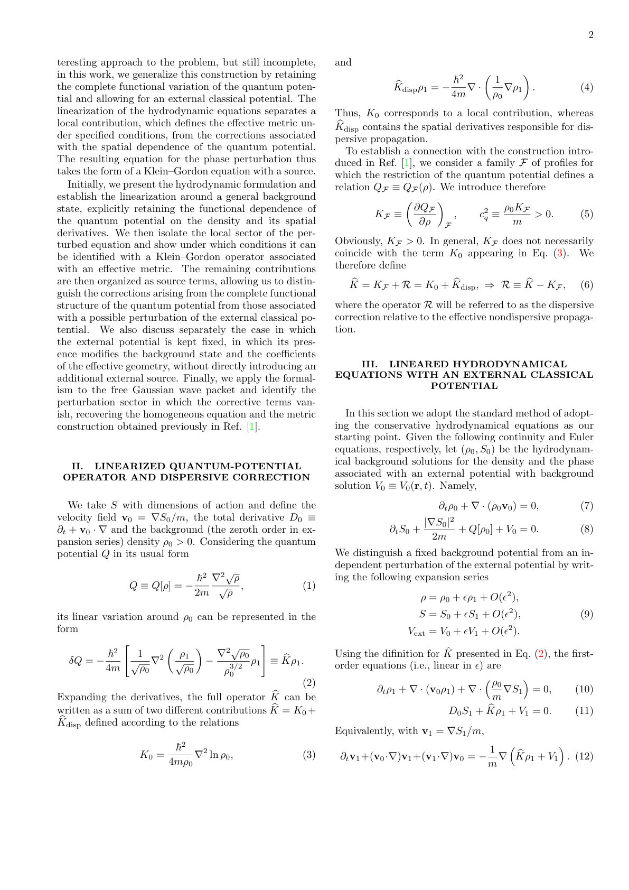
<figcaption class="paper-figure-caption"><b>Fig 1.</b> Low-resolution page preview, page 2</figcaption>
</figure>
<figure class="paper-figure-card">
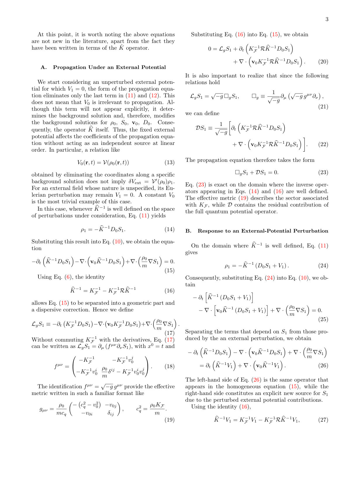
<figcaption class="paper-figure-caption"><b>Fig 2.</b> Low-resolution page preview, page 3</figcaption>
</figure>
<figure class="paper-figure-card">
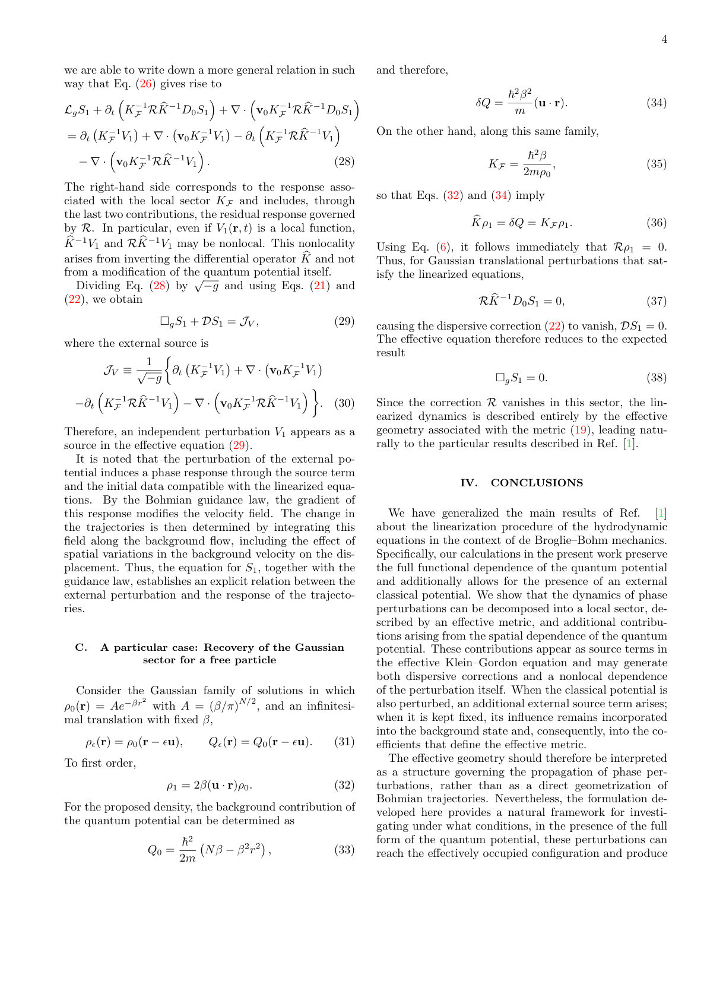
<figcaption class="paper-figure-caption"><b>Fig 3.</b> Low-resolution page preview, page 4</figcaption>
</figure>
<figure class="paper-figure-card">
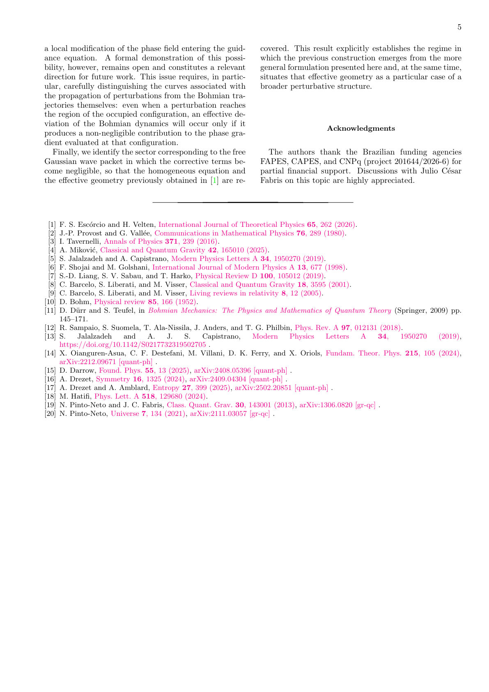
<figcaption class="paper-figure-caption"><b>Fig 4.</b> Low-resolution page preview, page 5</figcaption>
</figure>
</div>
<p><strong>Summary.</strong> This paper generalizes the description of phase perturbations in Bohmian Quantum Mechanics by deriving an effective metric that accounts for the complete functional dependence of the quantum potential. It shows that the dynamics are governed by a modified Klein-Gordon equation, separating the geometric propagation from dispersive corrections arising from the full quantum potential structure. This offers a more comprehensive theoretical tool for analyzing quantum wave dynamics.</p>
<p><strong>Why it may be interesting.</strong> This work provides a rigorous geometric description of quantum dynamics beyond standard semiclassical approximations, which is relevant for understanding wave packet spreading and non-linear quantum effects in complex systems.</p>
<details>
<summary>Detailed structure</summary>
<p><strong>Main problem.</strong> The paper derives a generalized effective metric for phase perturbations within Bohmian Quantum Mechanics, extending previous work by fully accounting for the quantum potential's functional variation and incorporating external classical potentials.</p>
<p><strong>Main result.</strong> The dynamics of phase perturbations are governed by an effective Klein-Gordon equation ($\square_g S_1 + D S_1 = 0$), where the metric $g_{\mu
u}$ describes the local geometry, and the term $D S_1$ captures dispersive corrections from the full quantum potential structure.</p>
<p><strong>Method.</strong> The methodology involves linearizing the hydrodynamic equations derived from the Madelung transformation and separating the resulting equation into a geometric sector and a residual dispersive correction term using specialized differential operators.</p>
<p><strong>Model / system.</strong> The study is set within the framework of Bohmian Quantum Mechanics, analyzing the dynamics of phase perturbations ($S_1$) around a background state ($
ho_0, S_0$) under the influence of external potentials ($V_{ ext{ext}}$).</p>
<p><strong>Key observables.</strong> The effective metric ($g_{\mu
u}$) for phase perturbations and the resulting effective Klein-Gordon equation ($\square_g S_1 + D S_1 = 0$).</p>
<p><strong>Important parameters / regimes.</strong> The background density ($
ho_0$), velocity field ($v_0$), and the external potential perturbation ($V_1$).</p>
<p><strong>Assumptions / limitations.</strong> The derivation assumes the inverse operators used in the analysis are well-defined, and the analysis is based on linearizing the hydrodynamic equations.</p>
<p><strong>Figures summary.</strong> Not specified.</p>
<p><strong>Paper structure.</strong> The paper progresses by first establishing the generalized framework for the effective metric, then deriving the full propagation equation for phase perturbations, and finally analyzing specific limiting cases, such as the free Gaussian wave packet, where the dispersive corrections vanish.</p>
</details>
<details>
<summary>Abstract</summary>
<p>By linearizing the hydrodynamic equations associated with the Madelung transformation in the context of Bohmian dynamics, we derive an effective metric for the phase perturbation around a background state. We show that the metric previously obtained previously by the same authors arises naturally as a particular case of a more general structure, in which the complete functional variation of the quantum potential is retained and external classical potentials can be incorporated. This generalization preserves the dependence of the quantum potential on the density and its spatial derivatives, generating additional terms that introduce dispersive corrections and act as sources in the effective Klein-Gordon equation. To organize these contributions, we introduce differential operators that separate the local sector responsible for the effective geometry from the corrections associated with the complete functional structure of the quantum potential. We identify the conditions under which these additional terms become negligible, recovering homogeneous propagation and the effective geometry for the Gaussian wave packet of a free particle.</p>
</details>
<p><sub><a href="#top">↑ back to top</a></sub></p>

<p><a id="paper-2610.23108"></a></p>
<h3 id="multiscale-quantum-classical-simulation-of-protein-autoproteolysis-in-a-million-atom-membrane-environment"><a href="http://arxiv.org/abs/2610.23108v1">Multiscale Quantum-Classical Simulation of Protein Autoproteolysis in a Million-Atom Membrane Environment</a></h3>
<p><strong>Authors:</strong> Alexander Orlov, Alexis Ralli, Tim Weaving, Michael Williams de la Bastida, Reuben Martin, Zohim Chandani, Minh Chung, P. V. Sriluckshmy, Fedor Simkovic, Luigi Iapichino, Peter J. Love, Christian B. Mendl, Andrea Townsend-Nicholson, Peter V. Coveney<br>
<strong>Type:</strong> theory · <strong>Category:</strong> strongly correlated electrons · <strong>PDF:</strong> <a href="https://arxiv.org/pdf/2610.23108v1">https://arxiv.org/pdf/2610.23108v1</a><br>
<strong>Analysis basis:</strong> full PDF text, analyzed in chunks</p>
<div class="figure-strip-hint">↔ Scroll figures horizontally</div>
<div class="paper-figures-scroll">
<figure class="paper-figure-card">
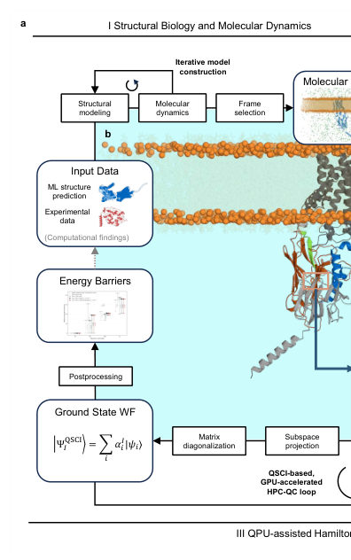
<figcaption class="paper-figure-caption"><b>Fig 1.</b> Fig. 1: WF-in-DFT-in-MD workflow for reaction-barrier calculations in a biomolecular environment, applied to aGPCR autoproteolysis. a Three-stage workflow from structural modeling and molecular dynamics to reaction-path recon- struction and embedding, followed by QPU-assisted Hamiltonian diagonalization. In stage I, the model is built iteratively from computational and experimental structures, embedded in a realistic environment and assessed by MD. A configuration favorable for the reaction of interest is sampled from a final MD trajectory and provides the input to stage II. The reaction pathway is reconstructed at the QM/MM level through an iterative protocol of constrained...</figcaption>
</figure>
<figure class="paper-figure-card">
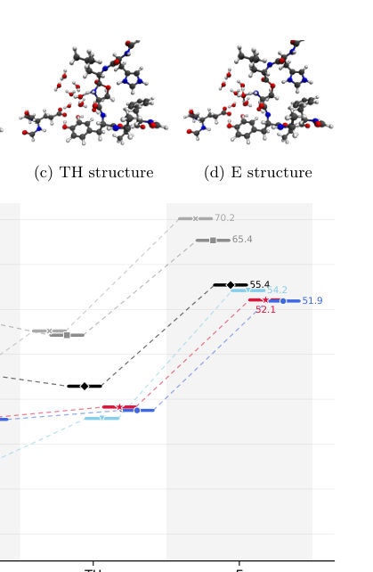
<figcaption class="paper-figure-caption"><b>Fig 2.</b> Fig. 3: WF-in-DFT-in-MD electronic barriers. Full WF-in-DFT-in-MD profiles for the R, T1, TH and E structures shown in (a) – (d), comparing the relative energies predicted by DFT, HF, QSCI and HCI benchmarks (the variational energy shown is computed at ε1 = 5 × 10−5, while the extrapolated results are computed with semistochastic perturbations at ε2 = 10−6). The Seufert et al. ADGRL1 reference is also shown for context, although we stress those values are Gibbs free energies (∆G), while we report electronic energies.</figcaption>
</figure>
</div>
<p><strong>Summary.</strong> This work presents a novel, multiscale quantum-classical simulation framework to study protein autoproteolysis in a massive, membrane-embedded system. By tightly coupling MD, DFT, and quantum wavefunction methods, the authors extend highly accurate electronic structure calculations to biologically relevant scales. This demonstrates a pathway for quantum computers to accelerate simulations of complex chemical reactions in biology.</p>
<p><strong>Why it may be interesting.</strong> The integration of quantum computing resources (QPU) directly into a chemically demanding, multiscale simulation workflow for biomolecules is highly relevant, pushing the boundaries of simulating open quantum systems in complex chemical environments.</p>
<details>
<summary>Detailed structure</summary>
<p><strong>Main problem.</strong> The core challenge is accurately predicting chemical reaction mechanisms in large, complex biomolecular systems where reactive centers are embedded in environments that significantly influence electronic structure.</p>
<p><strong>Main result.</strong> The authors successfully applied a hybrid quantum-classical workflow to model the autoproteolysis of a large receptor, showing that correlated electronic structure methods can be extended to biologically relevant scales.</p>
<p><strong>Method.</strong> A multiscale, hybrid workflow combining Molecular Dynamics, DFT, and correlated wavefunction methods (like QSCI), integrating CPUs, GPUs, and QPUs.</p>
<p><strong>Model / system.</strong> The system is the ADGRG1 adhesion G protein-coupled receptor undergoing autoproteolysis, modeled in a biologically realistic environment exceeding one million atoms within an endoplasmic-reticulum membrane.</p>
<p><strong>Key observables.</strong> Reaction barriers, reaction rates, and the specific autoproteolytic cleavage pathway (N–O acyl shift).</p>
<p><strong>Important parameters / regimes.</strong> The simulation spans multiple length and accuracy scales, incorporating a 54-qubit IQM quantum processor and thousands of GPU cores.</p>
<p><strong>Assumptions / limitations.</strong> The quantum advantage is noted as unproven, and the final WF-in-DFT-in-MD energies are single-point calculations that neglect the full structural relaxation of the environment.</p>
<p><strong>Figures summary.</strong> Figure 1 details the modular workflow from structural modeling to QPU wavefunction sampling. Figure 2 illustrates the proposed N–O acyl shift reaction pathway (R $
ightarrow$ T1 $
ightarrow$ TH $
ightarrow$ E). Figure 3 compares calculated relative energies using different electronic structure methods.</p>
<p><strong>Paper structure.</strong> The paper outlines a modular, multi-stage workflow: 1) MD sampling of conformations, 2) QM/MM reaction-path reconstruction via constrained scans, 3) Embedding the active space Hamiltonian, and 4) Treating the active space using quantum computational resources (QPU-assisted diagonalization).</p>
</details>
<details>
<summary>Abstract</summary>
<p>Predicting chemical reactions in biomolecules is challenging because reactive centers are embedded within complex environments that strongly influence their energetics and mechanisms. Here, we present a hybrid quantum-classical workflow that combines molecular dynamics, density functional theory, and correlated wavefunction methods, tightly integrating CPUs, GPUs, and quantum processing units (QPUs) to enable simulations across multiple length and accuracy scales. We apply this approach to ADGRG1 autoproteolysis, a maturation reaction in an adhesion G protein-coupled receptor that has not previously been studied using correlated electronic-structure methods. Our simulations treat a biologically realistic system containing more than one million atoms, including the full-length uncleaved receptor embedded in an endoplasmic-reticulum membrane, while incorporating a 54-qubit IQM quantum processor and up to 1,200 NVIDIA H100 GPUs. These results demonstrate how quantum computers can serve as accelerators within scalable scientific workflows, extending correlated electronic-structure methods to biologically relevant systems.</p>
</details>
<p><sub><a href="#top">↑ back to top</a></sub></p>

<p><a id="paper-2610.23645"></a></p>
<h3 id="partially-isophase-electro-magnetic-configurations"><a href="http://arxiv.org/abs/2610.23645v1">Partially isophase electro-magnetic configurations</a></h3>
<p><strong>Authors:</strong> Andrey M. Pupasov-Maksimov<br>
<strong>Type:</strong> theory · <strong>Category:</strong> other · <strong>PDF:</strong> <a href="https://arxiv.org/pdf/2610.23645v1">https://arxiv.org/pdf/2610.23645v1</a><br>
<strong>Analysis basis:</strong> full PDF text, analyzed in chunks</p>
<div class="figure-strip-hint">↔ Scroll figures horizontally</div>
<div class="paper-figures-scroll">
<figure class="paper-figure-card">
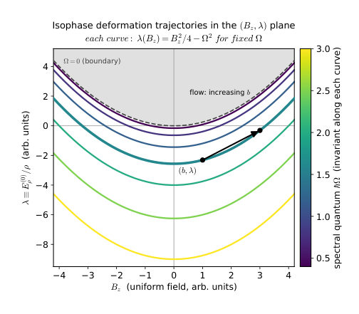
<figcaption class="paper-figure-caption"><b>Fig 1.</b> FIG. 1. Trajectories of the transformation (12),(13) in the (Bz, λ) plane, λ ≡E(0) ρ /ρ. Along each parabola λ = B2 z/4 − Ω2 the spectral quantum ℏΩ(color) is constant; the shaded region is Ω2 &lt; 0. The arrow is one step b →b + δb. For a non-linear background E(0) ρ (ρ), λ is the coefficient of its linear part, the only one changed by the flow.</figcaption>
</figure>
<figure class="paper-figure-card">
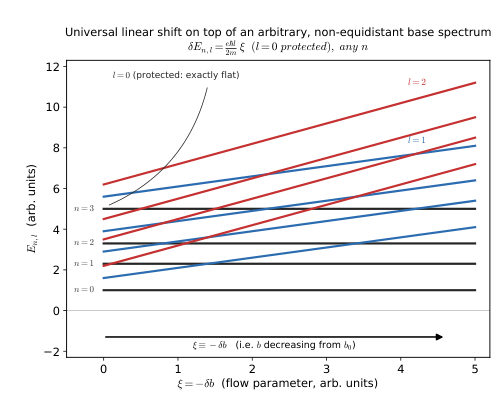
<figcaption class="paper-figure-caption"><b>Fig 2.</b> FIG. 2. Spectral flow (14) for l = 0 (protected), 1, 2 ver- sus ξ = −δb, on top of a non-equidistant bare spectrum En,0(b0) (levels n = 0, . . . , 3). Every n shifts linearly by δEn,l = eℏl ξ/2m, whatever the bare spectrum; the l = 0 levels stay flat.</figcaption>
</figure>
<figure class="paper-figure-card">
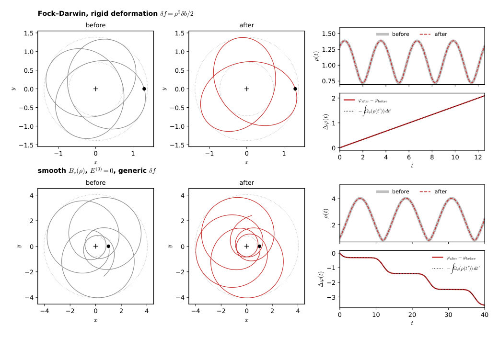
<figcaption class="paper-figure-caption"><b>Fig 3.</b> FIG. 3. Classical orbits with L = L0 before and after the transformation (e = m = 1), obtained by integrating Newton’s equations with the Lorentz force; the dot marks the initial point, dotted circles are the turning radii. Top: Fock–Darwin system, b = 1, λ = −0.75 (ω+/ω−= 3, closed four-lobe orbit), δf = ρ2δb/2, δb = −1/3 (ω+/ω−= 2, closed three-lobe orbit). Bottom: Bz = 0.6 + 1.4 e−ρ2/1.32, E(0) = 0, δf = 0.5 ρ2e−ρ2/2. Right: ρ(t) is identical before and after (to 10−9), while φafter −φbefore = − R Ωδ(ρ(t′)) dt′ (dotted) grows linearly (rigid rotation) in the quadratic case and by steps (differential rotation) otherwise.</figcaption>
</figure>
<figure class="paper-figure-card">
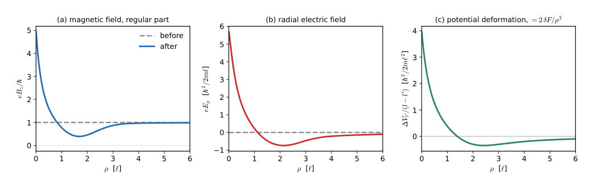
<figcaption class="paper-figure-caption"><b>Fig 4.</b> FIG. 4. Regular parts of the fields before and after the two-channel deformation (ls = 0, l = 1, µ = 1/2, ω = 1, E1 = ω/2, E2 = −3ω/2; ℏ2/2m = 1): (a) Bz, (b) Eρ, (c) universal potential deformation ∆Vl′/(l−l′). The AB flux µ = 1/2 is unchanged.</figcaption>
</figure>
<figure class="paper-figure-card">
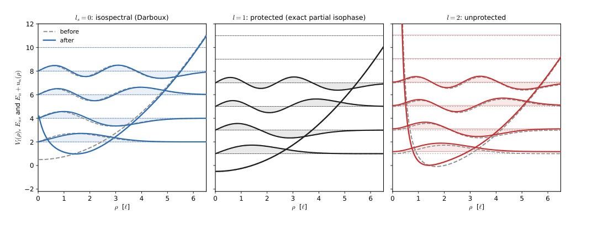
<figcaption class="paper-figure-caption"><b>Fig 5.</b> FIG. 5. Potentials, levels and eigenfunctions En + un(ρ) before (dashed) and after (solid) the deformation for the isospectral channel ls = 0, the protected channel l = 1 (unchanged) and the unprotected channel l = 2.</figcaption>
</figure>
</div>
<p><strong>Summary.</strong> This work introduces the concept of 'partial isophase symmetry' to characterize electromagnetic backgrounds that can change while leaving the quantum dynamics invariant in one specific energy sector. By analyzing the Schrödinger equation, the authors demonstrate that such symmetries allow for the construction of infinite families of dynamically equivalent fields. This provides a theoretical framework for understanding protected quantum channels in complex electromagnetic environments.</p>
<p><strong>Why it may be interesting.</strong> The concept of partial isophase symmetry provides a powerful tool for understanding how physical systems can undergo dramatic external changes while maintaining robust, protected quantum dynamics in specific subspaces, which is relevant for designing robust quantum devices.</p>
<details>
<summary>Detailed structure</summary>
<p><strong>Main problem.</strong> The paper investigates a novel type of invariance, termed 'partial isophase symmetry,' in the quantum dynamics of a charged particle subjected to time-varying electromagnetic fields.</p>
<p><strong>Main result.</strong> The symmetry implies the existence of an infinite family of physically distinct, yet dynamically equivalent, electromagnetic backgrounds that leave the quantum evolution invariant in one specific, protected energy sector.</p>
<p><strong>Method.</strong> The analysis uses the 3D Schrödinger equation, focusing on separation of variables and deriving conditions for Hamiltonian invariance under field deformations, including extensions to two-channel isospectrality.</p>
<p><strong>Model / system.</strong> The system is a charged particle governed by the Schrödinger equation in an external electromagnetic field, analyzed primarily in axially symmetric geometries (e.g., Fock-Darwin oscillator) and generalized to 2DEG slab geometries.</p>
<p><strong>Key observables.</strong> Energy spectrum, wave packet evolution, transmission coefficient (T), and the conserved quantum number labeling the protected sector.</p>
<p><strong>Important parameters / regimes.</strong> The conserved quantum number ($l$), the deformation parameter ($\delta f(
ho)$), and the magnetic field components ($\mathbf{B}, \mathbf{E}$).</p>
<p><strong>Assumptions / limitations.</strong> The analysis relies on the existence of separation of variables and treats the system in the quasiclassical limit for some derivations.</p>
<p><strong>Figures summary.</strong> Figures illustrate spectral flow (linear shifts in energy levels) and the effect of field deformations on classical trajectories, showing invariant quantities along specific curves.</p>
<p><strong>Paper structure.</strong> The paper introduces the partial isophase symmetry via separation of variables, analyzes the axially symmetric case (Fock-Darwin), extends the symmetry to multiple channels using Darboux transformations, and discusses the implications for the inverse spectral problem.</p>
</details>
<details>
<summary>Abstract</summary>
<p>Separation of variables in Schrödinger equation allows an infinite-dimensional family of physically distinct field configurations that are dynamically indistinguishable in one selected sector, labeled by a conserved quantum number, while differing in all others. We call such a symmetry a partial isophase symmetry. Two main examples are considered: axially symmetric magnetic backgrounds (a rigid spectral flow of the Fock--Darwin oscillator, purely magnetic isophase families, and a two-channel extension) and a Cartesian slab geometry (magnetic barriers in two-dimensional electron gases, treated in the Appendices). We further discuss the consequences of this symmetry for the inverse spectral problem and consider its quasiclassical counterpart.</p>
</details>
<p><sub><a href="#top">↑ back to top</a></sub></p>

<p><a id="paper-2610.22876"></a></p>
<h3 id="quantum-approximate-stochastic-combinatorial-optimisation"><a href="http://arxiv.org/abs/2610.22876v1">Quantum approximate stochastic combinatorial optimisation</a></h3>
<p><strong>Authors:</strong> Edric Matwiejew, Paulo E. Santos, Jingbo B. Wang, Ugo Varetto<br>
<strong>Type:</strong> theory · <strong>Category:</strong> quantum information and computing · <strong>PDF:</strong> <a href="https://arxiv.org/pdf/2610.22876v1">https://arxiv.org/pdf/2610.22876v1</a><br>
<strong>Analysis basis:</strong> full PDF text, analyzed in chunks</p>
<div class="figure-strip-hint">↔ Scroll figures horizontally</div>
<div class="paper-figures-scroll">
<figure class="paper-figure-card">
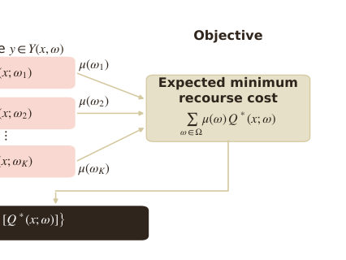
<figcaption class="paper-figure-caption"><b>Fig 1.</b> Figure 1: Two-stage stochastic optimisation with recourse. A first-stage decision x is selected before uncertainty is revealed, incurring the deterministic cost C(x). For each scenario ω ∈Ω, the recourse action is chosen from Y (x, ω) to minimise Q(x, y; ω), giving Q∗(x; ω). Averaging this minimum cost under µ and adding C(x) gives the stochastic objective Jµ(x).</figcaption>
</figure>
<figure class="paper-figure-card">
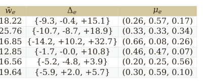
<figcaption class="paper-figure-caption"><b>Fig 2.</b> Figure 2: Representative six-vertex stochastic MaxCut instance. Left: graph structure with edge thickness proportional to the nominal weight ¯we. Right: nominal weight ¯we, perturbation support ∆e, and marginal distribution µe for each edge.</figcaption>
</figure>
<figure class="paper-figure-card">

<figcaption class="paper-figure-caption"><b>Fig 3.</b> Figure 3: Schematic circuit for QASCO. SX prepares the solution register in a uniform state over all first-stage solutions, and SΩprepares a probability-weighted superposition over the space of scenarios according to the target distribution µ. The recourse register is prepared conditionally on the solution and scenario registers by SY . UC and UQ phase-encode the first-stage and recourse costs, respectively. The adjoint preparation unitaries S† Y and S† Ωaggregate amplitudes associated with the same first-stage choice in a component flagged by |0⟩Ω|0⟩Y . The controlled mixer Λ0(UW ) acts on this component before the amplitudes are redistributed back to the full problem configuration space...</figcaption>
</figure>
<figure class="paper-figure-card">

<figcaption class="paper-figure-caption"><b>Fig 4.</b> Figure 4: Induced partite-graph structure of the controlled mixer with a transverse-field, or hypercube, solution-space adjacency AX with |X| = 8. Here SY prepares a uniform superposition over recourse ac- tions, |sx,ω⟩Y = |s⟩Y . The scenario distribution is a product of µ0 = (0.825, 0.175), µ1 = (0.660, 0.340), and µ2 = (0.739, 0.261). Left: the first-stage solution-space adjacency. Middle: the rank-one projector |r⟩⟨r|, where |r⟩= |µ⟩Ω|s⟩Y , with basis states ordered as (ω, y). Right: the induced adjacency matrix Amix. Block rows and columns correspond to the partite sets Vx and Vx′; each block is (AX)x,x′ |r⟩⟨r|. White entries are zero and darker entries have larger weights.</figcaption>
</figure>
<figure class="paper-figure-card">

<figcaption class="paper-figure-caption"><b>Fig 5.</b> Figure 5: QWOA recourse preconditioner SY for stochastic MaxCut. Each of the pR layers applies the modified recourse-phase oracle Ue Q, followed by transverse-field mixing on Y . The preconditioner parameters (α, β) are optimised first and then held fixed during optimisation of the main ansatz parameters. For pR = 0, the circuit reduces to H⊗n on the recourse register.</figcaption>
</figure>
</div>
<p><strong>Summary.</strong> This paper proposes QASCO, a novel variational quantum-walk ansatz designed to solve two-stage stochastic combinatorial optimization problems. It overcomes the difficulty of explicitly calculating expected minimum recourse costs by embedding this dependency directly into the quantum circuit dynamics. The results demonstrate that QASCO reliably finds globally optimal first-stage decisions for problems like Stochastic MaxCut, outperforming classical benchmarks.</p>
<p><strong>Why it may be interesting.</strong> While focused on optimization, the core mechanism involves designing a quantum circuit (variational quantum walk) to implicitly handle complex, multi-stage dependencies (recourse) that are classically intractable, which is a key area in quantum algorithm design.</p>
<details>
<summary>Detailed structure</summary>
<p><strong>Main problem.</strong> The paper addresses the computationally hard problem of two-stage stochastic combinatorial optimization, where decisions must be made before all uncertain information is known.</p>
<p><strong>Main result.</strong> The proposed QASCO ansatz successfully incorporates scenario-dependent recourse into the quantum dynamics, showing superior performance over previous quantum and classical heuristics in reaching optimal first-stage decisions.</p>
<p><strong>Method.</strong> It introduces Quantum Approximate Stochastic Combinatorial Optimisation (QASCO), a variational quantum-walk ansatz that searches the decision space by coherently modeling the expected minimum recourse cost.</p>
<p><strong>Model / system.</strong> The model is the two-stage stochastic program, formulated for problems like Stochastic MaxCut, requiring the encoding of first-stage decisions, scenario realizations, and recourse actions across multiple quantum registers.</p>
<p><strong>Key observables.</strong> Amplitude concentration on stochastic-optimal decisions, Hit rate, Expected Run Time (ERT), and Recourse evaluation cost (number of queries).</p>
<p><strong>Important parameters / regimes.</strong> Variational parameters ($\gamma, t$), ansatz depth ($p$), and the required Sample Average Approximation (SAA) batch sizes ($M_{req}$).</p>
<p><strong>Assumptions / limitations.</strong> The method assumes an efficiently preparable scenario distribution and relies on a product-form model for the joint distribution of uncertain parameters.</p>
<p><strong>Figures summary.</strong> Figures illustrate the two-stage optimization process, the QASCO circuit structure across three registers, and benchmark results comparing QASCO against classical methods (Tabu, Greedy, Uniform) regarding hit rates and run times.</p>
<p><strong>Paper structure.</strong> The paper first defines the two-stage stochastic program, then introduces the QASCO ansatz, details its circuit implementation for stochastic MaxCut, and concludes with extensive numerical studies comparing its performance against classical heuristics.</p>
</details>
<details>
<summary>Abstract</summary>
<p>Two-stage stochastic combinatorial optimisation concerns discrete decisions made before all relevant information is known. An initial decision is made; once uncertainty is resolved, it can be adapted to the realised scenario, at a cost. The aim is to find the initial decision that minimises the upfront cost plus the expected cost of optimal adaptation. The first-stage decision problem is often NP-hard, and computing the expected minimum recourse cost can be $\#\mathrm{P}$-hard for a single first-stage candidate. We introduce Quantum Approximate Stochastic Combinatorial Optimisation (QASCO), a variational quantum-walk ansatz that coherently incorporates scenario-dependent recourse into its dynamics to search over first-stage decisions without explicitly evaluating expected minimum recourse costs. We demonstrate QASCO for MaxCut with stochastic edge weights, obtain a circuit with polynomial per-layer gate complexity, and study the ansatz via exact state-vector simulation. Across the instances considered, QASCO concentrates amplitude more effectively on stochastic-optimal first-stage decisions than a previously proposed two-stage QAOA construction. We further show that the ansatz can be calibrated using a depth-independent number of parameters and applied to unseen instances without further circuit-parameter optimisation, including joint decision--scenario--recourse spaces spanning more than $2^{32}$ configurations. Under a query-cost model, comparison with the tested classical heuristics using sample-average approximations of the expected minimum recourse cost shows that QASCO more reliably reaches globally optimal first-stage solutions while requiring fewer cut evaluations. These results show how to incorporate scenario-dependent recourse into the ansatz dynamics, providing a general framework for variational quantum walks in two-stage stochastic combinatorial optimisation.</p>
</details>
<p><sub><a href="#top">↑ back to top</a></sub></p>

<p><a id="paper-2610.23405"></a></p>
<h3 id="quantum-circuits-for-variable-coefficient-vlasov-dynamics-via-schrodingerisation"><a href="http://arxiv.org/abs/2610.23405v1">Quantum Circuits for Variable-Coefficient Vlasov Dynamics via Schrödingerisation</a></h3>
<p><strong>Authors:</strong> Fong Yew Leong, Dax Enshan Koh, Wei-Bin Ewe, Qiubo Chen, Zhun-Yong Ong<br>
<strong>Type:</strong> theory · <strong>Category:</strong> quantum information and computing · <strong>PDF:</strong> <a href="https://arxiv.org/pdf/2610.23405v1">https://arxiv.org/pdf/2610.23405v1</a><br>
<strong>Analysis basis:</strong> full PDF text, analyzed in chunks</p>
<div class="figure-strip-hint">↔ Scroll figures horizontally</div>
<div class="paper-figures-scroll">
<figure class="paper-figure-card">

<figcaption class="paper-figure-caption"><b>Fig 1.</b> Figure 3: vV1 block for A1 term. The dashed region applies the phase rotations θ0 and θb on the p-register, controlled by the velocity register, while the remaining controlled vWj and vU blocks implement the bulk and boundary finite-difference couplings. The dotted region indicates the corresponding vV2 block for the A2 term, which has the same layout but uses phase selections vWj(λ = −π/2) and vU(λ = π/2).</figcaption>
</figure>
<figure class="paper-figure-card">

<figcaption class="paper-figure-caption"><b>Fig 2.</b> Figure 4: Construction of Block 1 from binary-controlled powers of vV1, followed by a single vV2 block. Each P-register qubit controls the corresponding power vV 2l 1 , and the most significant qubit controls the adjoint unitaries.</figcaption>
</figure>
<figure class="paper-figure-card">

<figcaption class="paper-figure-caption"><b>Fig 3.</b> Figure 7: Phase-space validation of the 1D1V Schrödingerised Vlasov circuit for nx = nv = 5, np = 7, Nt = 1, ∆t = 0.05, and T = 0.05. (a) Initial distribution f0(x, vx). (b) Recovered quantum distribution fQ(x, vx, T). (c) Pointwise difference between the quantum and scheme-matched classical solutions, fQ −fC. The difference is of order 10−5, compared with distribution amplitudes of order 10−2.</figcaption>
</figure>
<figure class="paper-figure-card">

<figcaption class="paper-figure-caption"><b>Fig 4.</b> Figure 8: Marginal distributions for the 1D1V validation case at T = 0.05. (a) Spatial marginal ρ(x) = P vx f(x, vx). (b) Velocity marginal g(vx) = P x f(x, vx). The initial distribution (t = 0, dashed), scheme-matched classical solution (solid), and recovered quantum solution (markers) are shown.</figcaption>
</figure>
<figure class="paper-figure-card">

<figcaption class="paper-figure-caption"><b>Fig 5.</b> Figure 9: Resource scaling and temporal behaviour of the 1D1V Schrödingerised Vlasov circuit. (a) Peak logical-qubit count nq as the spatial and velocity grid resolutions are increased together from nx = nv = 2 to 5, with np = 7 fixed. The horizontal axis shows the corresponding combined number of physical grid points, Nx + Nv. (b) Decomposed CNOT count NCX and rotation-like gate count Nrot as functions of the number of Strang steps Nt for (nx, nv) = (3, 3), (4, 4), and (5, 5), with np = 7. Both resource measures grow approximately linearly with Nt. (c) Relative quantum–classical L2 discrepancy ϵQ−C versus total simulated time T = Nt∆t for the (nx, nv, np) = (4, 4, 7) circuit using ∆t =...</figcaption>
</figure>
</div>
<p><strong>Summary.</strong> This paper presents a method to simulate high-dimensional Vlasov dynamics, which governs collisionless plasma, using purely quantum circuits. By employing Schrödingerisation, they overcome the challenge of variable coefficients and non-unitary evolution, achieving a fully coherent simulation. The work provides critical resource estimates for scaling this simulation to large, complex physical systems.</p>
<p><strong>Why it may be interesting.</strong> This work provides a concrete, resource-aware blueprint for simulating complex, non-Hamiltonian, non-equilibrium dynamics (like plasma physics) using purely quantum computational primitives, which is highly relevant for quantum simulation efforts.</p>
<details>
<summary>Detailed structure</summary>
<p><strong>Main problem.</strong> The paper addresses the challenge of developing fully coherent quantum simulation circuits for high-dimensional Vlasov dynamics, especially when the governing equations involve variable coefficients.</p>
<p><strong>Main result.</strong> They successfully developed explicit Schrödingerised circuits for variable-coefficient Vlasov transport, demonstrating simulation of coupled 3D3V systems entirely coherently on quantum hardware.</p>
<p><strong>Method.</strong> The core method involves Schrödingerisation to map the non-unitary evolution to a unitary quantum circuit, which is then implemented using structured, explicit quantum gates for both velocity-dependent streaming and field-dependent acceleration.</p>
<p><strong>Model / system.</strong> The model is the Vlasov equation, describing collisionless plasma dynamics, which is simulated by encoding the phase-space density into an amplitude-encoded quantum state. The simulation is extended to coupled 3D3V anharmonic Penning systems on a six-dimensional phase space.</p>
<p><strong>Key observables.</strong> Circuit depth, resource scaling (linear growth with time steps), state fidelity ($F$), and quantum-classical discrepancy ($\epsilon_{Q-C}$).</p>
<p><strong>Important parameters / regimes.</strong> Number of time steps, dimension of the phase space (e.g., 6D), and the degree of the polynomial external field.</p>
<p><strong>Assumptions / limitations.</strong> The simulation relies on the Schrödingerisation technique to maintain unitarity, and resource analysis highlights the auxiliary register as the dominant depth bottleneck.</p>
<p><strong>Figures summary.</strong> Figures illustrate generic circuit blocks for coefficient dependence, the structure of velocity-dependent free-streaming, and comparisons of state preparation fidelity and error for different initial profiles.</p>
<p><strong>Paper structure.</strong> The paper details the theoretical framework of Schrödingerisation for Vlasov dynamics, presents the circuit decomposition for variable coefficients (velocity and field dependence), and analyzes the resource costs and state preparation techniques for high fidelity.</p>
</details>
<details>
<summary>Abstract</summary>
<p>High-dimensional Vlasov equations present promising use cases for quantum simulation, but their transport coefficients must be implemented coherently in order to preserve a compact quantum representation. We develop explicit Schrödingerised circuits for prescribed external field Vlasov dynamics without classical field updates. In 1D1V, velocity-dependent streaming is compiled directly from the encoded velocity register, while a non-linear cubic field is evaluated using reversible fixed-point arithmetic. For fixed polynomial degree, the field workspace scales linearly with the coordinate register width, while the field evaluation subroutine has polynomial depth. As a proof of concept, we simulate a minimal coupled 3D3V anharmonic Penning system and realise mixed electric-field terms and transverse magnetic coupling on a six-dimensional phase space in agreement with classical calculations. Resource analysis shows approximately linear growth with the number of time steps, while identifying the auxiliary register as the dominant depth bottleneck. Structured preparation and register recovery of the auxiliary state reveal an interplay between loading cost and readout. Together, our algorithm demonstrates a fully coherent quantum simulation of high-dimensional Vlasov dynamics with variable coefficients and identifies the practical resource costs that must be controlled for large-scale quantum implementation.</p>
</details>
<p><sub><a href="#top">↑ back to top</a></sub></p>

<p><a id="paper-2610.23398"></a></p>
<h3 id="quantum-sensitivity-of-math791math-component-cat-states"><a href="http://arxiv.org/abs/2610.23398v1">Quantum Sensitivity of $N$-Component Cat States</a></h3>
<p><strong>Authors:</strong> Ranjit Singh, Alexander E. Teretenkov<br>
<strong>Type:</strong> theory · <strong>Category:</strong> other · <strong>PDF:</strong> <a href="https://arxiv.org/pdf/2610.23398v1">https://arxiv.org/pdf/2610.23398v1</a><br>
<strong>Analysis basis:</strong> full PDF text, analyzed in chunks</p>
<div class="figure-strip-hint">↔ Scroll figures horizontally</div>
<div class="paper-figures-scroll">
<figure class="paper-figure-card">

<figcaption class="paper-figure-caption"><b>Fig 1.</b> Figure 1: Wigner functions for equal-phase N = 2, 3, 4 cats at α = 3, calculated from Eq. (7). The horizontal and vertical axes are Re β and Im β.</figcaption>
</figure>
<figure class="paper-figure-card">

<figcaption class="paper-figure-caption"><b>Fig 2.</b> Figure 2: Contours of the exact squared overlap γN(θ, δ, 0) = 10−3 (solid) and 10−2 (dashed) for N = 2, 3, 4, α = 1.5, and real δ. The axes are displacement δ and rotation angle θ; no squeezing is applied.</figcaption>
</figure>
<figure class="paper-figure-card">

<figcaption class="paper-figure-caption"><b>Fig 3.</b> Figure 3: Squared-overlap contours for squeezed states at t = 0.2, g = |A2| = 1, and φ = π. All other parameters and contour levels are as in Fig. 2. The ordered transformation is S†U(θ)D(δ)S.</figcaption>
</figure>
<figure class="paper-figure-card">

<figcaption class="paper-figure-caption"><b>Fig 4.</b> Figure 4: Exact phase quantum Fisher information FQ,N for equal-phase cat states as a function of the component number N = 2, . . . , 9 at the common mean photon number ¯n = 2.25. The coherent amplitude |αN| is independently adjusted for each N using Eq. (14). The dashed line denotes the coherent-state benchmark F coh Q = 4¯n = 9.00. All values are evaluated from the exact expression (13), valid for arbitrary N; the large-N asymptote is given in Eq. (17).</figcaption>
</figure>
</div>
<p><strong>Summary.</strong> This paper theoretically investigates the quantum sensitivity of $N$-component Schrödinger cat states for phase estimation. By deriving an exact overlap kernel, the authors calculate the Quantum Fisher Information (QFI), showing that the QFI scales predictably with $N$ at fixed mean photon number. The results confirm the utility of these complex states for quantum sensing while also cautioning about practical limitations on achievable precision.</p>
<p><strong>Why it may be interesting.</strong> This work is highly relevant to quantum optics and quantum metrology, providing theoretical bounds on the precision achievable in phase estimation using complex, high-dimensional quantum states like cat states.</p>
<details>
<summary>Detailed structure</summary>
<p><strong>Main problem.</strong> The paper extends the study of squeezed Schrödinger cat states to an arbitrary number $N$ of coherent components to analyze their quantum sensitivity for phase estimation.</p>
<p><strong>Main result.</strong> The Quantum Fisher Information (QFI) for these states approaches a fixed-energy asymptote $F_{Q,N} = 4ar{n}(N-ar{n}) + o(1)$, which matches the known QFI for a vacuum–$N$-photon superposition.</p>
<p><strong>Method.</strong> The authors derive a closed complex overlap kernel for the ordered action of displacement, phase rotation, and squeezing, and relate the QFI to the second derivative of this overlap function.</p>
<p><strong>Model / system.</strong> The system is a single-mode quantum state modeled by $N$-component cat states, constructed as superpositions of coherent states, analyzed under the action of displacement, phase rotation, and squeezing unitaries.</p>
<p><strong>Key observables.</strong> Quantum Fisher Information ($F_{Q,N}$), squared overlap kernel ($\gamma_N$), and the ideal quantum Cramér–Rao bound ($\Delta	heta_{	ext{QCRB}}$).</p>
<p><strong>Important parameters / regimes.</strong> Number of components ($N$), mean photon number ($ar{n}$), displacement magnitude ($\delta$), and squeezing parameter ($t$).</p>
<p><strong>Assumptions / limitations.</strong> The analysis distinguishes between local QFI and operational phase uncertainty, noting that the ideal bound does not guarantee unlimited precision due to practical limitations like optical loss.</p>
<p><strong>Figures summary.</strong> Figures illustrate Wigner functions and contours of the squared overlap $\gamma_N$ for $N=2, 3, 4$ under various transformations (squeezing, displacement).</p>
<p><strong>Paper structure.</strong> The paper builds by first establishing the general overlap kernel, then deriving the QFI for the squeezed state, and finally analyzing the asymptotic behavior and comparing results against benchmarks like coherent and squeezed-vacuum states.</p>
</details>
<details>
<summary>Abstract</summary>
<p>We extend our previous study of squeezed two-component Schrödinger cat states to a phase-referenced single-mode family with an arbitrary number $N$ of coherent components and general relative phases. Within the established circular-state construction, we derive a closed complex overlap kernel for the ordered action of displacement, phase rotation, and squeezing, retaining exact finite-amplitude normalization. We distinguish finite-displacement orthogonality from local phase-estimation sensitivity quantified by quantum Fisher information (QFI). For equal-phase states, we compare $N=2,\ldots,9$ at a common mean photon number and include coherent-state and squeezed-vacuum benchmarks. A bound on the higher photon-number sectors establishes the fixed-energy asymptote $F_{Q,N}=4\bar n(N-\bar n)+o(1)$. Its leading term agrees with the known QFI of a vacuum--$N$-photon superposition. The resulting decrease of the ideal local quantum Cramér--Rao bound does not establish unlimited attainable precision: prior phase information, sample size, phase-reference resources, optical loss, state preparation, and measurement choice remain relevant.</p>
</details>
<p><sub><a href="#top">↑ back to top</a></sub></p>

<p><a id="paper-2610.23529"></a></p>
<h3 id="renormalization-group-domain-walls-from-phantom-symmetries"><a href="http://arxiv.org/abs/2610.23529v1">Renormalization Group Domain Walls from Phantom Symmetries</a></h3>
<p><strong>Authors:</strong> Jin Chen<br>
<strong>Type:</strong> theory · <strong>Category:</strong> strongly correlated electrons · <strong>PDF:</strong> <a href="https://arxiv.org/pdf/2610.23529v1">https://arxiv.org/pdf/2610.23529v1</a><br>
<strong>Analysis basis:</strong> full PDF text, analyzed in chunks</p>
<div class="figure-strip-hint">↔ Scroll figures horizontally</div>
<div class="paper-figures-scroll">
<figure class="paper-figure-card">

<figcaption class="paper-figure-caption"><b>Fig 1.</b> Figure 1. Half-space construction of an RG domain wall. A perturbation given by a relevant operator is switched on for x &lt; 0. The dashed magenta line denotes the interface during the flow, which need not be conformal. The solid magenta line denotes the RG wall after both the perturbed bulk and the interface interactions have reached their fixed points.</figcaption>
</figure>
<figure class="paper-figure-card">

<figcaption class="paper-figure-caption"><b>Fig 2.</b> Figure 2. Folding and shrinking a transmitted TDL. Black dots denote chiral IR and anti-chiral UV endpoint fields before folding, and their combined chiral field O(h) s afterwards. The dashed line is the transmitted TDL, which becomes bLs in the folded theory TA. Shrinking its segment brings the endpoint field to the RG brane (magenta) as a boundary operator of the same dimension h.</figcaption>
</figure>
<figure class="paper-figure-card">

<figcaption class="paper-figure-caption"><b>Fig 3.</b> Figure 3. Transport between RG branes for orbifold related RG flows. The green dashed line is the topological interface IG between the original and orbifold UV theories, with the common IR factor unchanged. Fusing it into the outer RG brane (magenta) removes the intervening orbifold strip and produces the inner RG brane at the distinguished moduli point ⃗φ∗.</figcaption>
</figure>
<figure class="paper-figure-card">

<figcaption class="paper-figure-caption"><b>Fig 4.</b> Figure 4. Self-annulus spectrum of R211(φ) between the RG angle φ∗= π and the factorized point φ = 0. Blue and red curves show primary weights extracted from the two remainders Fφ and Jφ defined in Appendix A. Dashed lines are the known constant levels. The additional dotted primary and the descendant shown in purple approach h = 1 from above. Black points give the independently known factorized spectrum, with multiplicities indicated when larger than one.</figcaption>
</figure>
<figure class="paper-figure-card">

<figcaption class="paper-figure-caption"><b>Fig 5.</b> Figure 5. A TIM spin-mixing channel through the composed Potts–M5,6–TIM interface. The green dashed and magenta lines denote Itop and IRG. The arrows follow a nonzero mixing channel from σT to Φ2,2, not an operator identity across the RG wall. Gauging turns this v-odd field into the Potts defect field µc, with h = ¯h = 1/40, attached to the charge conjugation line. The line ends on Itop. The Φ2,4 channel is treated in the same way. Neither channel contributes to ordinary local Potts–TIM spin overlaps of R211.</figcaption>
</figure>
</div>
<p><strong>Summary.</strong> This paper provides a systematic algebraic construction for understanding Renormalization Group domain walls connecting different 2D Conformal Field Theories. By utilizing phantom symmetries and automorphism groups, the authors classify two types of RG interfaces and calculate key non-perturbative physical observables. This work offers a powerful mathematical tool for analyzing quantum phase transitions in strongly correlated matter.</p>
<p><strong>Why it may be interesting.</strong> The rigorous mathematical framework connecting RG flow structures to algebraic symmetries (automorphisms) is highly relevant for understanding quantum critical points and boundary physics in strongly correlated systems.</p>
<details>
<summary>Detailed structure</summary>
<p><strong>Main problem.</strong> The paper develops a systematic method to construct Renormalization Group (RG) domain walls connecting two-dimensional rational conformal field theories (RCFTs). This addresses how physical theories flow between different fixed points.</p>
<p><strong>Main result.</strong> The construction yields two types of RG walls—those from outer automorphisms and continuous families from inner automorphisms—and demonstrates how these can be mapped onto each other via an orbifold interface.</p>
<p><strong>Method.</strong> The method uses an auxiliary chiral extension and relies on identifying suitable automorphism-twisted Cardy states within this auxiliary theory.</p>
<p><strong>Model / system.</strong> The study focuses on RG flows between various CFTs, including non-unitary minimal models, parafermion theories, and generalized parafermion models.</p>
<p><strong>Key observables.</strong> Boundary entropies, spectra, UV–IR operator mixings, and boundary monodromy.</p>
<p><strong>Important parameters / regimes.</strong> The structure depends on the existence of preserved Topological Defect Lines (TDLs) and the specific automorphisms (outer vs. inner).</p>
<p><strong>Assumptions / limitations.</strong> The initial construction assumes the UV and IR theories are RCFTs, and the analysis relies on the algebraic structure provided by the auxiliary theory.</p>
<p><strong>Figures summary.</strong> Figure 1 illustrates the half-space construction of an RG domain wall using a relevant operator perturbation, while Figure 2 shows the folding and shrinking of a transmitted TDL onto the RG brane.</p>
<p><strong>Paper structure.</strong> The paper builds by first establishing the general algebraic framework using auxiliary theories and automorphisms, then detailing the two types of RG walls (outer vs. inner), demonstrating these constructions with specific examples (minimal models, parafermions), and finally calculating non-perturbative observables.</p>
</details>
<details>
<summary>Abstract</summary>
<p>We develop a systematic construction of renormalization group (RG) domain walls between two-dimensional rational conformal field theories. Using phantom currents, we consider an auxiliary chiral extension linked to the folded ultraviolet--infrared theory by a topological interface. The construction of RG walls then reduces to identifying suitable automorphism-twisted Cardy states in the auxiliary theory. We find two such types of automorphisms: outer automorphisms exchanging identical current algebra factors, as in Gaiotto's construction, and continuous inner automorphisms generated by the zero modes of spin-one phantom currents. In the latter case, the RG domain walls generically admit a continuous defect conformal manifold. We further show that, when an RG flow can be orbifolded to another one, the orbifold may lift defect conformal moduli of the RG brane constructed using inner automorphisms. The two types of RG branes can then be mapped to each other via a topological interface defined by the orbifold. We demonstrate the two types of RG brane construction via various examples of flows between non-unitary minimal models, from parafermions to minimal models, and between generalized parafermions. Many physical observables of the RG walls are computed non-perturbatively, including boundary entropies and spectra, and UV--IR operator mixings. We also find interesting nontrivial boundary monodromy: a closed cycle in the defect conformal moduli space can carry an RG domain wall into other distinct non-trivial conformal interfaces.</p>
</details>
<p><sub><a href="#top">↑ back to top</a></sub></p>

<p><a id="paper-2610.23834"></a></p>
<h3 id="task-aligned-spectral-inductive-biases-in-parameterized-quantum-circuits"><a href="http://arxiv.org/abs/2610.23834v1">Task-aligned spectral inductive biases in parameterized quantum circuits</a></h3>
<p><strong>Authors:</strong> Felix Frohnert, Adrián Pérez-Salinas, Sebastian Lange, Marcus Schwaebisch, Evert van Nieuwenburg, Vedran Dunjko<br>
<strong>Type:</strong> theory · <strong>Category:</strong> quantum information and computing · <strong>PDF:</strong> <a href="https://arxiv.org/pdf/2610.23834v1">https://arxiv.org/pdf/2610.23834v1</a><br>
<strong>Analysis basis:</strong> full PDF text, analyzed in chunks</p>
<div class="figure-strip-hint">↔ Scroll figures horizontally</div>
<div class="paper-figures-scroll">
<figure class="paper-figure-card">

<figcaption class="paper-figure-caption"><b>Fig 1.</b> Figure 1. From query-controlled circuits to geometry-aligned classification. (II) In a DDR circuit, a fixed query controls how signal-dependent Fourier components are combined, modifying the represented function without providing sample- specific information (Sec. II). (III) A spectral classification task supplies a fixed query f ⋆and, through its sampling positions and score structure, a target spectrum Ω(f) ⋆ that guides the query encoding (Sec. III). (IV) In SAR, the acquisition geometry supplies this structure, enabling geometry-aligned classification directly from raw measurements without first reconstructing a focused image (Sec. IV).</figcaption>
</figure>
<figure class="paper-figure-card">

<figcaption class="paper-figure-caption"><b>Fig 2.</b> Figure 2. Parameterized quantum circuits with data reuploading architectures: (a) The nq-qubit single data reuploading scheme consisting of L layers. Classical input features x are re-encoded at each layer via Eℓ(x) alongside parameterized unitaries Vℓ(θ). (b) The nq-qubit double data reuploading scheme extended to two input streams, x and f, structured across L/2 blocks. Each block alternates between encoding unitaries E(f) ℓ (f) and E(x) ℓ (x) and parameterized unitaries V (f) ℓ (θ) and V (x) ℓ (θ).</figcaption>
</figure>
<figure class="paper-figure-card">

<figcaption class="paper-figure-caption"><b>Fig 3.</b> Figure 3. Changing the query encoding or the query value can alter the hypothesis class and the function prior. The top row varies the encoding at fixed f = (π/4, π/3); the bottom row varies f(t) = t1 at fixed encoding. In each row, the three series represent (I) an absorbable local encoding with Haar-distributed parameters, (II) the same encoding with a Gaussian parameter prior of width 0.35, and (III) a nonlocal encoding with Haar-distributed parameters. The comparisons preserve the accessible query-frequency spectrum Ω(f), isolating changes beyond frequency support. (a–c) Encoding interpolation. The generators H(f) ℓ,n(α) = sℓ</figcaption>
</figure>
<figure class="paper-figure-card">

<figcaption class="paper-figure-caption"><b>Fig 4.</b> Figure 4. A task-aligned fixed query improves learning in a teacher–student problem. Teachers are DDR circuits evaluated at f ⋆= (π/4, π/3); students use the correct query, the mismatched query 2f ⋆, or no query. All students share the same architecture, trainable parameters, initializations, and optimization budget. (a) Test balanced accuracy versus training-set size. Lines show averages over ten independently sampled teachers after averaging folds within each teacher; shaded regions are paired 95% bootstrap intervals over teach- ers. (b) Median best-found relative mean-square error when fitting the continuous teacher score on an independent grid. The correct-query model reaches numerical...</figcaption>
</figure>
<figure class="paper-figure-card">

<figcaption class="paper-figure-caption"><b>Fig 5.</b> Figure 5. Classification sensitivity to the fixed query value. (a) Test balanced accuracy for students trained with f(λ) = λf ⋆, where f ⋆= (π/4, π/3) is the query used to generate the teacher labels. The values λ = 0, 1, and 2 corre- spond to the no-query, correct-query, and mismatched-query models, respectively. (b) Local sensitivity to perturbations f = f ⋆+ δ(cos ϕ, sin ϕ) over eight sampled directions. The solid curve denotes the directional mean, the light band the directional 10–90% range, and the dashed curve the minimum accuracy over directions, averaged over teachers. The marked tolerance δ1% estimates the largest query mismatch for which the worst-direction accuracy remains...</figcaption>
</figure>
</div>
<p><strong>Summary.</strong> This work develops a theoretical framework showing that incorporating a fixed 'query' input into Parameterized Quantum Circuits (PQCs) allows for the precise engineering of task-specific inductive biases. By analyzing the resulting spectral structure, the authors demonstrate that this mechanism can successfully map known signal processing tasks, such as those involving Nonuniform Fourier Transforms, onto quantum circuits, improving performance with limited data.</p>
<p><strong>Why it may be interesting.</strong> It provides a rigorous, mathematically grounded method for engineering quantum circuit architectures to naturally encode physical constraints (like spectral relationships) relevant to quantum sensing or quantum simulation.</p>
<details>
<summary>Detailed structure</summary>
<p><strong>Main problem.</strong> The paper addresses how to design Parameterized Quantum Circuits (PQCs) to incorporate task-specific inductive biases, moving beyond general circuit training.</p>
<p><strong>Main result.</strong> By introducing a fixed, task-defined 'query' input alongside the variable 'signal' input, the circuit's hypothesis class can be precisely modulated to match structures found in spectral signal processing tasks.</p>
<p><strong>Method.</strong> The authors utilize a Double Data Reuploading (DDR) circuit architecture, analyzing the resulting expectation value through Fourier decomposition to isolate the effect of the query on the circuit's coefficients.</p>
<p><strong>Model / system.</strong> The model is a PQC processed via a DDR structure, taking two inputs: a sample-dependent signal $\mathbf{x}$ and a fixed, task-defined query $\mathbf{f}$. The output is analyzed as a Generalized Trigonometric Polynomial (GTP) of both inputs.</p>
<p><strong>Key observables.</strong> The hypothesis class, the modulation of signal coefficients, and the relative mean-square error for approximation tasks.</p>
<p><strong>Important parameters / regimes.</strong> The structure of the query $\mathbf{f}$ (e.g., determined by SAR acquisition geometry) and the number of trainable parameters $\theta$.</p>
<p><strong>Assumptions / limitations.</strong> The analysis relies on the query encoding failing certain 'absorption' conditions to demonstrate a true change in the model's representational power.</p>
<p><strong>Figures summary.</strong> Figures illustrate the DDR circuit structure, showing how the query controls the encoding, and demonstrate the application to SAR classification where geometry dictates the query.</p>
<p><strong>Paper structure.</strong> The paper first establishes the mathematical framework of DDR circuits, then analyzes the effect of the query on the hypothesis class using formal propositions, and finally applies this understanding to solve a spectral classification problem inspired by synthetic aperture radar (SAR).</p>
</details>
<details>
<summary>Abstract</summary>
<p>Parameterized quantum circuits are widely investigated in quantum machine learning, yet how their architecture can provide task-aligned inductive biases remains poorly understood. We study data reuploading quantum circuits with two distinct inputs: a signal that varies between samples and a fixed, task-defined spectral query that specifies how the signal should be probed. We show that encoding the query can change the circuit's hypothesis class over the signal by modulating how its existing signal frequencies are combined, without introducing new sample-dependent information. This mechanism matches tasks built on nonuniform Fourier transforms, whose evaluation frequencies specify the query and whose sampling positions guide its encoding. We examine this connection in a classification task inspired by synthetic aperture radar, where acquisition geometry determines a query for classifying unfocused spectral patches before image formation. Across small-scale spectral and radar-like tasks, aligned queries improve learning from limited data over parameter-matched circuits with mismatched or absent queries. These results provide a route from known spectral task structure to the design and validation of inductive biases in parameterized quantum circuits.</p>
</details>
<p><sub><a href="#top">↑ back to top</a></sub></p>

<p><a id="paper-2610.23536"></a></p>
<h3 id="temperature-dependence-of-a-warm-ensemble-based-memory-on-quantum-communication-rates"><a href="http://arxiv.org/abs/2610.23536v1">Temperature dependence of a warm ensemble based memory on quantum communication rates</a></h3>
<p><strong>Authors:</strong> Kenny Gregory, Khaled Mnaymneh, Connor Kupchak, Andrew MacRae<br>
<strong>Type:</strong> both · <strong>Category:</strong> quantum information and computing · <strong>PDF:</strong> <a href="https://arxiv.org/pdf/2610.23536v1">https://arxiv.org/pdf/2610.23536v1</a><br>
<strong>Analysis basis:</strong> full PDF text, analyzed in chunks</p>
<div class="figure-strip-hint">↔ Scroll figures horizontally</div>
<div class="paper-figures-scroll">
<figure class="paper-figure-card">

<figcaption class="paper-figure-caption"><b>Fig 1.</b> Fig. 1: Schematic of a quantum repeater scheme where the total length L is divided into n = 3 links. Legend: (BSM) Bell-state measurement, (QM) Quantum memory, (BSS) Bell-state source.</figcaption>
</figure>
<figure class="paper-figure-card">

<figcaption class="paper-figure-caption"><b>Fig 2.</b> Fig. 2: Optical storage using EIT using optical depths of D = 2, 3, 5 corresponding to simulated optical storage efficiencies of ηmem = 5%, 9%, 16% respectively. In these simulations the control field Rabi frequency was Ωc = 1.5Γ and storage duration of 2µs. Inset: Simulated storage efficiency for increasing optical depths.</figcaption>
</figure>
<figure class="paper-figure-card">

<figcaption class="paper-figure-caption"><b>Fig 3.</b> Fig. 3: a) Level scheme for 3-level lambda system suitable for optical storage using EIT. b) Schematic diagram of the experimental setup where a single laser is employed for both the control and probe beams. The probe field is frequency modulated at the 87Rb ground state splitting frequency. Both fields are fibre coupled separately into the QMem system and spatially overlapped before propagation inside the gas vapour cell. Glan-laser prisms are used for field combination and separation.</figcaption>
</figure>
<figure class="paper-figure-card">

<figcaption class="paper-figure-caption"><b>Fig 4.</b> Fig. 5: Asynchronous entanglement rate distributions for varying optical depths used in EIT storage. a) Using experimental optical depths and efficiencies using portable warm vapour QMem system. Distribution rates using theoretical optical depths possible with EIT for b) n = 2 and c) n = 4 links. d) Entanglement rate vs optical depth for different node numbers at a fixed transmission distance of L = 250 km.</figcaption>
</figure>
<figure class="paper-figure-card">

<figcaption class="paper-figure-caption"><b>Fig 5.</b> Fig. 4: Experimental optical depths and storage efficiencies of the QMem system over temperatures of 328-348K (55-75◦C). The QMem system exhibits an exponential nature for the optical depth and an asymptotic response for the efficiency over the temperatures achievable in our system.</figcaption>
</figure>
</div>
<p><strong>Summary.</strong> This paper analyzes the feasibility of using warm atomic vapor quantum memories for long-distance quantum communication via quantum repeaters. By simulating and measuring the memory's efficiency dependence on temperature and optical depth, the authors quantify how these physical limitations constrain the achievable entanglement distribution rates. The results provide a crucial tool for designing robust, scalable quantum network nodes.</p>
<p><strong>Why it may be interesting.</strong> This work directly bridges atomic physics (EIT, warm vapor dynamics) with quantum networking protocols, providing quantitative metrics (temperature dependence, optical depth scaling) essential for realizing practical quantum communication infrastructure.</p>
<details>
<summary>Detailed structure</summary>
<p><strong>Main problem.</strong> The paper investigates the temperature dependence of quantum memory performance to determine its impact on achievable entanglement distribution rates for long-distance quantum repeaters.</p>
<p><strong>Main result.</strong> The analysis provides a framework showing how memory efficiency, which depends on temperature and optical depth, critically limits the overall entanglement rate in quantum repeater nodes.</p>
<p><strong>Method.</strong> The authors simulate and measure the optical depth-based performance of an EIT quantum memory and translate these metrics into end-to-end entanglement distribution rates using established repeater models.</p>
<p><strong>Model / system.</strong> The system uses a warm atomic vapor cell operating under Electromagnetically Induced Transparency (EIT) to function as a quantum memory (QM). The performance is modeled using the entanglement distribution rate equation, incorporating memory efficiency ($\eta_{mem}$) and detector efficiency ($\eta_{det}$).</p>
<p><strong>Key observables.</strong> Entanglement distribution rate ($R$), memory efficiency ($\eta_{mem}$), and optical depth ($D$).</p>
<p><strong>Important parameters / regimes.</strong> Temperature range (328–348 K), attenuation coefficient ($\alpha = 0.2 	ext{ dB/km}$), and node number ($n=2, 4$).</p>
<p><strong>Assumptions / limitations.</strong> Assumes the entangled source is maximally entangled, the BSM efficiency is 50%, and initially assumes infinite memory lifetime for model comparisons.</p>
<p><strong>Figures summary.</strong> Figures illustrate the quantum repeater schematic, the $\Lambda$-system level structure, experimental measurements of optical depth and storage efficiency vs. temperature, and finally, the resulting asynchronous entanglement rate distributions for varying optical depths and node numbers.</p>
<p><strong>Paper structure.</strong> The paper first establishes the quantum repeater model, then details the physical platform (EIT in warm vapor) and the necessary measurements (optical depth vs. temperature). Finally, it integrates these measured efficiencies into the repeater rate equation to analyze performance trade-offs across different link lengths and node counts.</p>
</details>
<details>
<summary>Abstract</summary>
<p>The success of long-distance quantum communication will hinge on quantum repeater nodes equipped with robust and scalable quantum memories. Such memories must possess specific operating characteristics to make these nodes practical. An attractive option for these memory devices is an atomic warm vapor system operating under the conditions of electromagnetically induced transparency (EIT). These systems are easy to implement and require relatively low equipment overhead. A key metric in atomic-based quantum memory performance is optical depth, as it is closely tied to the strength of light-matter coupling. Here, we simulate and measure the optical depth-based performance of an EIT quantum memory using a warm atomic vapor cell. We then translate the simulated and measured optical depth and efficiency metrics into expected entanglement distribution rates. Our analysis evaluates the feasibility of these memories in optical quantum repeater nodes, which are essential for robust long-distance quantum communication.</p>
</details>
<p><sub><a href="#top">↑ back to top</a></sub></p>

<p><a id="paper-2610.23354"></a></p>
<h3 id="temperature-dependence-of-the-casimir-force-between-plane-layered-structures-an-approach-based-on-the-principle-of-argument"><a href="http://arxiv.org/abs/2610.23354v1">Temperature dependence of the Casimir force between plane-layered structures: an approach based on the principle of argument</a></h3>
<p><strong>Authors:</strong> Michael V. Davidovich<br>
<strong>Type:</strong> theory · <strong>Category:</strong> statistical mechanics · <strong>PDF:</strong> <a href="https://arxiv.org/pdf/2610.23354v1">https://arxiv.org/pdf/2610.23354v1</a><br>
<strong>Analysis basis:</strong> full PDF text, analyzed in chunks</p>
<div class="figure-strip-hint">↔ Scroll figures horizontally</div>
<div class="paper-figures-scroll">
<figure class="paper-figure-card">

<figcaption class="paper-figure-caption"><b>Fig 1.</b> Fig. 1 Rectangular DxLxL resonator in two parts 3 and 5 with two ideally conducting structures 1</figcaption>
</figure>
<figure class="paper-figure-card">

<figcaption class="paper-figure-caption"><b>Fig 2.</b> Fig. 2. Outline for the argument principle theorem. The symbols “*” schematically represent the</figcaption>
</figure>
</div>
<p><strong>Summary.</strong> This theoretical paper develops a comprehensive formula for the temperature dependence of the Casimir-Lifshitz force between layered structures. It utilizes complex analysis techniques, such as the principle of argument, to unify the zero-temperature quantum result with finite-temperature thermal corrections. The result is significant for understanding Casimir forces in realistic, warm environments.</p>
<p><strong>Why it may be interesting.</strong> This work provides a rigorous, generalized framework for calculating thermal Casimir forces, which is crucial for designing nanoscale devices where thermal effects cannot be ignored.</p>
<details>
<summary>Detailed structure</summary>
<p><strong>Main problem.</strong> The paper derives a general, temperature-dependent formula for the Casimir-Lifshitz dispersion force between two arbitrary plane-layered structures.</p>
<p><strong>Main result.</strong> The derived formula generalizes previous results, showing how the force incorporates temperature effects via a combination of the standard Lifshitz formula and a temperature-dependent contour integral.</p>
<p><strong>Method.</strong> The analysis employs complex analysis, specifically the principle of argument, to derive the force from the free energy of the system, comparing results from contour integration with established Lifshitz theory.</p>
<p><strong>Model / system.</strong> The system consists of two plane-layered structures separated by a vacuum gap or a layer filled with an arbitrary dissipative dielectric. The theory handles interactions governed by electromagnetic fluctuations.</p>
<p><strong>Key observables.</strong> Casimir force ($F_C$), energy density ($E_C$), and the force's dependence on temperature ($T$) and separation distance ($d$).</p>
<p><strong>Important parameters / regimes.</strong> Temperature ($T$), gap size ($d$), and the material's dielectric permittivity $\epsilon(\omega)$. Key regimes include $T 	o 0$ and $T 	o \infty$.</p>
<p><strong>Assumptions / limitations.</strong> The approach relies on the applicability of the principle of argument and the use of reflection coefficients. Limitations exist regarding the applicability of long-wavelength fluctuation theory at very small distances ($< 1-10$ nm).</p>
<p><strong>Figures summary.</strong> Figures illustrate the force dependence on distance for various temperatures, comparing the derived Lifshitz result against the standard Casimir result.</p>
<p><strong>Paper structure.</strong> The paper builds from the general problem statement to deriving the temperature-dependent formula using complex analysis. It compares this result against known limits (T=0, T=infinity) and discusses the mathematical consistency between the contour integral and the established Lifshitz formalism.</p>
</details>
<details>
<summary>Abstract</summary>
<p>Based on the complex analysis theorem the principle of argument, a temperature-dependent formula for the Casimir-Lifshitz dispersion force of the interaction of two arbitrary plane-layered structures separated by either a vacuum gap of size d or a layer of size d consisting of an arbitrary dissipative dielectric with dispersion is derived. The formula consists of the temperature-dependent Lifshitz formula plus the temperature-dependent contour integral</p>
</details>
<p><sub><a href="#top">↑ back to top</a></sub></p>

<p><a id="paper-2610.23013"></a></p>
<h3 id="transport-signatures-of-a-kinetically-self-trapped-nagaoka-polaron"><a href="http://arxiv.org/abs/2610.23013v1">Transport Signatures of a Kinetically Self-Trapped Nagaoka Polaron</a></h3>
<p><strong>Authors:</strong> Yusong Xiao, Yuan Wan<br>
<strong>Type:</strong> theory · <strong>Category:</strong> strongly correlated electrons · <strong>PDF:</strong> <a href="https://arxiv.org/pdf/2610.23013v1">https://arxiv.org/pdf/2610.23013v1</a><br>
<strong>Analysis basis:</strong> full PDF text, analyzed in chunks</p>
<div class="figure-strip-hint">↔ Scroll figures horizontally</div>
<div class="paper-figures-scroll">
<figure class="paper-figure-card">

<figcaption class="paper-figure-caption"><b>Fig 1.</b> FIG. 1. Summary of the main results. (a) The temperature derivative of the DC mobility ∂µDC/∂T as a function of tem- perature T and Zeeman field h. Blue and red shaded areas are the polaron (∂µDC/∂T &gt; 0) and the incoherent transport regimes (∂µDC/∂T &lt; 0), separated by a crossover (solid line). The dashed line shows the crossover determined by the ap- pearance of a finite frequency peak in the dynamical mobility. (b) Representative dynamical mobility in the polaron regime (blue) and the incoherent transport regime (red). The corre- sponding locations in (a) are marked. (c) The finite frequency dynamical mobility peak is attributed to the internal modes of the hole trapped in a soft...</figcaption>
</figure>
<figure class="paper-figure-card">

<figcaption class="paper-figure-caption"><b>Fig 2.</b> FIG. 2. A walk Γ on the square lattice is decomposed into a skeleton (blue) dressed by self-retracing hairs (red). When embedded in the Bethe lattice, the skeleton is mapped to a Bethe lattice site, whereas the hair is mapped to excursions.</figcaption>
</figure>
<figure class="paper-figure-card">

<figcaption class="paper-figure-caption"><b>Fig 3.</b> FIG. 3. Thermal evolution of the dynamical mobility µ(ω). (a) Spin correlation on nearest neighbor bonds near the hole cut along the horizontal axis. Inset: spin correlations at kBT/t = 1/70. (b) Temperature driven evolution of µ(ω). (c) Cumulative spectral weight at kBT/t = 1/70 obtained by integrating SAC spectrum with a hard cutoff (orange) and by HLT method with a soft cutoff (blue). Inset shows the cutoff functions. (d) Transfer of spectral weights. Filled and open circles are for the HLT and SAC results, respectively. (e) DC mobility estimated from SAC (red) and HLT (blue). (f) Peak position of µ(ω) (red) compared with the toy model (blue). Inset shows the binding energies of the hole...</figcaption>
</figure>
<figure class="paper-figure-card">

<figcaption class="paper-figure-caption"><b>Fig 4.</b> FIG. 4. Field-driven polaron melting. (a) Spin correlations on nearest neighbor bonds near the hole along the horizontal cut for various Zeeman fields at kBT/t = 1/70. (b) Field-driven evolution of dynamical mobility µ(ω) at the same tempera- ture. (c) Transfer of spectral weights constructed from SAC (open circles) and HLT (filled circles). (d) Peak position as a function of field compared against the toy model. Inset: binding energies of bound states from the toy model.</figcaption>
</figure>
</div>
<p><strong>Summary.</strong> This work calculates the transport properties of the Nagaoka polaron in the t-model using advanced Quantum Monte Carlo techniques. The key finding is that as the system cools, the transport signature shifts from metallic to insulating, marked by a distinct finite-frequency peak. This demonstrates that transport measurements are a sensitive probe of kinetic self-trapping in correlated electron systems.</p>
<p><strong>Why it may be interesting.</strong> The connection between transport measurements (dynamical mobility) and the underlying electronic structure (polaron formation) provides a powerful diagnostic tool for understanding strongly correlated phases, which is relevant to understanding exotic quantum materials.</p>
<details>
<summary>Detailed structure</summary>
<p><strong>Main problem.</strong> The paper investigates the previously unexplored transport properties of the Nagaoka polaron, a key concept in kinetic magnetism.</p>
<p><strong>Main result.</strong> The dynamical mobility transitions from a Drude-like response to an insulating state characterized by a finite-frequency peak, signaling the internal mode of the hole confined by its ferromagnetic cloud.</p>
<p><strong>Method.</strong> The study employs resummation-based Quantum Monte Carlo simulations combined with stochastic analytic continuation to calculate the dynamical mobility.</p>
<p><strong>Model / system.</strong> The system is modeled as a single hole moving in the square-lattice t-model, which exhibits polaron formation and kinetic self-trapping.</p>
<p><strong>Key observables.</strong> Dynamical mobility $\mu(\omega)$, DC mobility $\mu_{	ext{DC}}$, and the finite-frequency peak in $\mu(\omega)$.</p>
<p><strong>Important parameters / regimes.</strong> Temperature ($T$), magnetic field (Zeeman field), and the lattice hopping parameter ($t$).</p>
<p><strong>Assumptions / limitations.</strong> The calculation relies on mapping the problem to a Bethe lattice model and using resummation techniques to efficiently compute current correlation functions.</p>
<p><strong>Figures summary.</strong> Figures illustrate the thermal evolution of $\mu(\omega)$ showing the transition to the peak, and the effect of an external magnetic field on melting this polaron state.</p>
<p><strong>Paper structure.</strong> The paper first establishes the theoretical framework using QMC on a Bethe lattice, then calculates the dynamical mobility, and finally analyzes the temperature and field dependence to characterize polaron formation and melting.</p>
</details>
<details>
<summary>Abstract</summary>
<p>Nagaoka polarons are canonical examples of kinetic magnetism. Although their spin structure is well understood, their transport remains unexplored. We compute the dynamical mobility of a single hole in the square-lattice $t$-model using resummation-based quantum Monte Carlo and analytic continuation. Upon cooling, an incoherent Drude-like response gives way to a finite-frequency peak as the dc mobility vanishes. The peak signals an internal mode of a hole confined by its ferromagnetic cloud. Our results establish transport as an incisive probe of polaron formation and kinetic self-trapping.</p>
</details>
<p><sub><a href="#top">↑ back to top</a></sub></p>

<p><a id="paper-2610.22476"></a></p>
<h3 id="typical-superpositions-are-magical"><a href="http://arxiv.org/abs/2610.22476v1">Typical Superpositions are Magical</a></h3>
<p><strong>Authors:</strong> Joshuah T. Heath, Andrew Urilyon, Damien Quinn, Graham Kells<br>
<strong>Type:</strong> theory · <strong>Category:</strong> quantum information and computing · <strong>PDF:</strong> <a href="https://arxiv.org/pdf/2610.22476v1">https://arxiv.org/pdf/2610.22476v1</a><br>
<strong>Analysis basis:</strong> full PDF text, analyzed in chunks</p>
<div class="figure-strip-hint">↔ Scroll figures horizontally</div>
<div class="paper-figures-scroll">
<figure class="paper-figure-card">

<figcaption class="paper-figure-caption"><b>Fig 1.</b> FIG. 1. The average non-stabilizer witness versus the sta- bilizer rank m for Haar random stabilizer states. The black dots are numerical data taken at N = 12 and averaged over 100 samples, while the purple dashed line is the theoretical prediction given by the in-figure equation. Increasing the sta- bilizer rank dilutes the diagonal excess to the Haar floor of the witness, which is a ceiling for the stabilizer Rényi entropy.</figcaption>
</figure>
<figure class="paper-figure-card">

<figcaption class="paper-figure-caption"><b>Fig 2.</b> FIG. 2. Diagrammatic representations for each non-vanishing contribution to the non-stabilizer witness of the m-state super- position. σdiag(P) and σoff(P) are defined in Eqn. (3). The non-stabilizer witness is a function of Pauli strings, P, and goes as ⟨ϕi|P|ϕj⟩⟨ϕj|P|ϕk⟩⟨ϕk|P|ϕℓ⟩⟨ϕℓ|P|ϕi⟩, with the black nodes in the above diagrams representing the four possible indices i, j, k, ℓ. A solid line connecting the nodes denotes a symmetric cycle where connected indices are equivalent; an arrow denotes a directed cycle where connected indices differ; and a dashed line denotes equality of the connected nodes whose contraction is prevented by the presence of one or more directed cycles. Symmetric...</figcaption>
</figure>
<figure class="paper-figure-card">

<figcaption class="paper-figure-caption"><b>Fig 3.</b> FIG. 3. Average stabilizer Rényi entropy (SRE) for two classes of equal-weight random superpositions, stabilizer states (cir- cles) and Gaussian states (diamonds), plotted versus the sta- bilizer rank and Gaussian rank, respectively. The SRE is averaged over 100 samples for each value of m, with cir- cles/diamonds representing numerical data, dashed lines the symmetry-restricted Haar ceiling, and solid lines the theoret- ical prediction. The SRE for random stabilizers is found with the fast Walsh-Hadamard transform [38, 39]. Error bars are smaller than most data points.</figcaption>
</figure>
<figure class="paper-figure-card">

<figcaption class="paper-figure-caption"><b>Fig 4.</b> FIG. 4. (a) The non-stabilizer witness for equal-weight ran- dom Gaussian states versus Gaussian rank m for N = 12. Numerical data is represented by the black dots, while the full theoretical prediction is the dashed purple line. Whereas in the case of random stabilizer states the 1/m3 term dominates M2(m) for small m (see Fig. 1), the growth of M2(m) for a small number of random Gaussian states is more strongly con- trolled by the 1/m2 dependence and the symmetry-restricted Haar floor of 4nfix = 8. (b) Same as (a), but only the theo- retical prediction at N = 85. Upon increasing N, the excess begins to scale as 1/m3.</figcaption>
</figure>
<figure class="paper-figure-card">

<figcaption class="paper-figure-caption"><b>Fig 5.</b> FIG. 1: The Jensen gap for the non-stabilizer witness. For N = 4, we see that the gap fluctuates even when taking 500 samples, and is comparable to the maximum value of the SRE N −2 = 2. As N is increased, we need less samples to reach convergence of the data, and the average gap over large values of m also becomes negligible compared to the Haar ceiling N −2.</figcaption>
</figure>
</div>
<p><strong>Summary.</strong> This paper develops a quantitative measure, the stabilizer Rényi entropy (SRE), to characterize the 'magic' or non-stabilizerness of quantum states. It demonstrates that for random superpositions of states (like stabilizer or Gaussian states), the SRE grows logarithmically with the number of components before reaching a universal maximum set by the Haar measure. The methodology involves sophisticated diagrammatic calculations on state expectation values.</p>
<p><strong>Why it may be interesting.</strong> The universal logarithmic scaling law derived for the approach to maximal entanglement/complexity is a fundamental result applicable to understanding the computational hardness of simulating random quantum states.</p>
<details>
<summary>Detailed structure</summary>
<p><strong>Main problem.</strong> The paper quantifies the 'magic' or non-stabilizerness of quantum states using the stabilizer Rényi entropy (SRE) and investigates how random superpositions approach the maximum possible SRE (the Haar ceiling).</p>
<p><strong>Main result.</strong> For both random stabilizer and random Gaussian states, the SRE exhibits a universal logarithmic scaling ($\propto \log_2 m$) as the number of components $m$ increases, before saturating at the Haar-valued maximum.</p>
<p><strong>Method.</strong> The analysis involves calculating the expectation value of a non-stabilizer witness $\langle W_\Psi(m) 
angle$ for superpositions, utilizing diagrammatic formalism and moment calculations for different state ensembles.</p>
<p><strong>Model / system.</strong> The study analyzes random pure-state ensembles, specifically $m$-component superpositions $|\Psi_m
angle = \sum_{i=1}^m \lambda_i |\phi_i
angle$, comparing results for random stabilizer states and random fermionic Gaussian states.</p>
<p><strong>Key observables.</strong> Stabilizer Rényi Entropy (SRE), the non-stabilizer witness $\langle W_\Psi(m) 
angle$, and the scaling of the excess over the Haar floor.</p>
<p><strong>Important parameters / regimes.</strong> Number of components ($m$), system size ($N$), and the fixed Pauli string count ($n_{	ext{fix}}$).</p>
<p><strong>Assumptions / limitations.</strong> The analysis relies on the ensemble satisfying conditions like Schur's lemma, and many results are derived in the thermodynamic limit ($N 	o \infty$).</p>
<p><strong>Figures summary.</strong> Figures illustrate the approach of the average non-stabilizer witness to the Haar floor for both stabilizer and Gaussian states, and compare numerical data against theoretical predictions for the SRE scaling.</p>
<p><strong>Paper structure.</strong> The paper progresses by defining the SRE and the witness, deriving general scaling laws, and then applying these methods to specific models: random stabilizer states (using 2-design properties) and random Gaussian states (using Majorana representations).</p>
</details>
<details>
<summary>Abstract</summary>
<p>The non-stabilizerness, or "magic", of a quantum state is a common metric for the hardness of simulation on a classical computer, and is often quantified by the stabilizer Rényi entropy (SRE). We show how random superpositions of classically simulable states saturate the SRE to the symmetry-restricted Haar-random maximum. For any large-$N$ random pure-state ensemble satisfying the conditions of Schur's lemma, the average SRE of the $m$-component superposition $\langle M_2(m)\rangle=N-\log_2[\langle W(m)\rangle]$ is governed by an average witness $\langle W(m)\rangle$ that universally decomposes into a Haar floor and an ensemble-specific excess. As the number of components $m$ increases, the excess is suppressed, resulting in a logarithmic scaling of the SRE before plateauing at the Haar-valued maximum. We derive a general closed form for $\langle W(m)\rangle$ in the thermodynamic limit, and numerically verify our result for random stabilizer states and random Gaussian states.</p>
</details>
<p><sub><a href="#top">↑ back to top</a></sub></p>
</details>
<h2 id="secondary-cond-mat-archives">Secondary cond-mat archives</h2>
<p><em>Papers from cond-mat.mtrl-sci, mes-hall, other, soft, supr-con. These archives are de-prioritized — they appear at the end regardless of relevance score.</em></p>
<h3 id="relevant-in-secondary-archives-11">Relevant in secondary archives (11)</h3>
<hr>
<p>
<a href="index.html">← Index</a>
 · <a href="papers_04.html">← Previous</a> · <a href="papers_06.html">Next →</a>
</p>
<hr>

</body>
</html>
